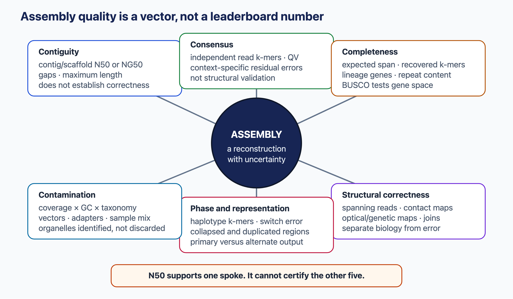
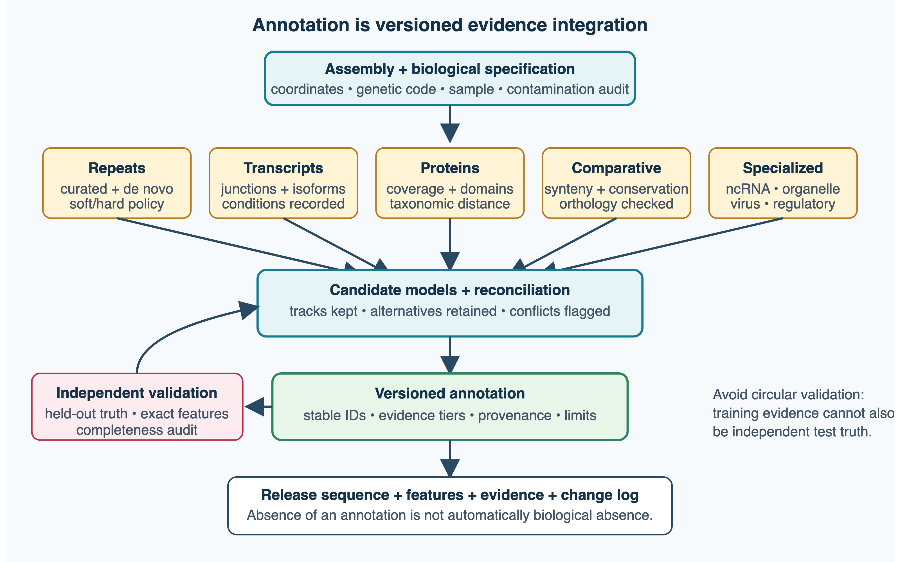
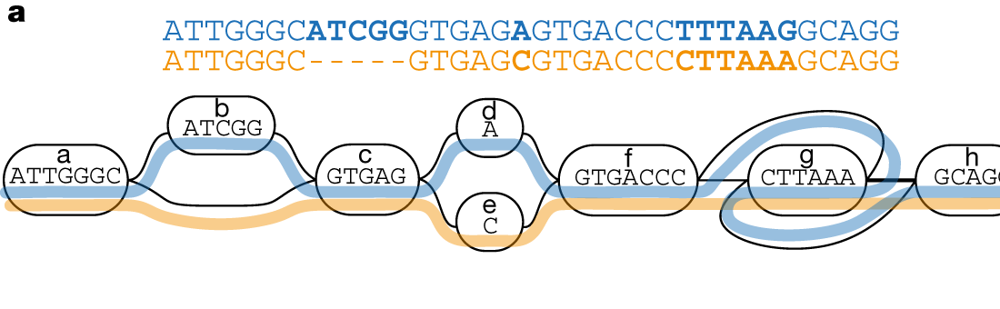

5 Genomics
Methods for sequencing, algorithms for assembly, gene predictions, etc.
5.1 Overview
Genomics turns DNA molecules into genome sequences and genome sequences into biological knowledge. In less than 50 years, sequencing has gone from a few hundred bases per experiment to complete human genomes in a day, and each new technology has required new algorithms. This chapter follows that history, with the focus on the computational methods. The technologies matter mainly because their read lengths and error profiles define the algorithmic problems. The chapter first builds a genome, then reads new genomes against it:
- sequencing technologies, from Sanger to single-molecule long reads, and the theory of shotgun sequencing and coverage (Section 5.2);
- genome assembly: overlap graphs, string graphs and de Bruijn graphs, repeats, scaffolding, haplotypes and assembly quality (Section 5.3);
- gene prediction in prokaryotes and eukaryotes, and evidence-based annotation (Section 5.4);
- metagenomics: amplicon and shotgun sequencing, profiling, assembly and binning (Section 5.5);
- read mapping and variant calling: indexes, SAM and VCF records, mapping quality, genotype likelihoods, structural variants, phasing, targeted sequencing, copy number and somatic variants in cancer (Section 5.6);
- regulatory and epigenomic sequencing: ChIP-seq, ATAC-seq, bisulfite and long-read methylation calling, and CLIP-seq (Section 5.7);
- human genetics: linkage disequilibrium, genome-wide association studies, fine-mapping, polygenic scores, and the search for Mendelian disease variants by exome and genome sequencing (Section 5.8).
The algorithms for exact matching that underlie read mapping are described in Section 1.4. What genome sequences have revealed about genome organisation and evolution is the subject of Chapter 6, and the analysis of RNA sequencing that of Chapter 7.
5.2 Sequencing methods
Every genome analysis starts with reading DNA. The properties of the reads (their length, their error profile and their cost) determine which algorithms are needed. This section describes the main sequencing technologies, roughly in historical order, and the basic theory of shotgun sequencing (Shendure et al. 2017; Goodwin et al. 2016).
5.2.1 First generation: Sanger sequencing
Two methods for sequencing DNA were published in 1977. Allan Maxam and Walter Gilbert used chemicals that cleave DNA after specific bases (Maxam and Gilbert 1977). Frederick Sanger’s chain-termination method (Sanger et al. 1977) became the standard. A DNA polymerase copies a single-stranded template in the presence of normal nucleotides and a small amount of dideoxynucleotides (ddNTPs), which lack the 3’ hydroxyl group needed to extend the chain. Each time a ddNTP is incorporated, synthesis stops, so the reaction produces fragments ending at every position. Originally four reactions, one per base, were run in separate lanes of a gel. The same year Sanger’s group published the first complete DNA genome, the 5386 bases of the bacteriophage φX174, and in 1980 Sanger and Gilbert shared the Nobel Prize in Chemistry.
Sanger sequencing was automated in the 1980s by labelling each of the four ddNTPs with a different fluorescent dye, so that all four reactions could run in one lane and be read by a laser (Smith et al. 1986), and later by replacing gels with capillaries. Capillary sequencers produced the first bacterial genomes and the human genome. Reads are 500–1000 bases long and very accurate. Assembling them required a reliable error estimate for each base. The program Phred (Ewing et al. 1998) introduced the quality score, and most modern technologies still report Phred-scaled base qualities,
\[ Q = -10 \log_{10} P_{\text{error}}, \]
so that \(Q = 20\) means a 1% error probability and \(Q = 30\) 0.1%. Sanger sequencing is still used to check individual clones and mutations, but it is too slow and expensive for genomes: it produces one read per capillary per run.
5.2.2 Second generation: massively parallel short reads
Second-generation, or “next-generation”, sequencing replaced the separation of fragments by size with sequencing by synthesis of millions of immobilised, clonally amplified DNA molecules, imaged in parallel.
- Pyrosequencing detects the pyrophosphate released when a nucleotide is incorporated, through an enzymatic cascade that ends with light from luciferase (Ronaghi et al. 1998). One nucleotide type is added at a time. 454 sequencing (2005) ran pyrosequencing in about a million picolitre wells, each containing a bead with DNA amplified by emulsion PCR (Margulies et al. 2005). Reads were 100–700 bases. The signal is proportional to the number of identical bases incorporated, and long runs are hard to count, so the characteristic errors are indels in homopolymer runs.
- Illumina sequencing (originally Solexa) amplifies each molecule into a cluster on a glass flow cell by bridge amplification, and then adds all four nucleotides at once, each with a different fluorescent label and a reversible terminator, so that exactly one base is added per cycle (Bentley et al. 2008). After imaging, the label and terminator are removed and the next cycle begins. Reads are typically 2 × 150 bases. Errors are mainly substitutions, at a rate well below 1% (depending on instrument and chemistry), increasing towards the end of the read as molecules in a cluster get out of phase. Illumina came to dominate the market, and reduced the cost of a human genome from millions of dollars in 2007 to around a thousand dollars in 2014 and a few hundred in 2026 (citation needed).
- Ion Torrent sequencing detects the protons released during incorporation with a semiconductor chip: a pH meter rather than a camera (Rothberg et al. 2011). Like 454, it adds one nucleotide type at a time and has homopolymer errors.
Short reads are cheap and accurate, but they cannot span repeats longer than a few hundred bases, which limits both assembly (Section 5.3) and the detection of structural variants (Section 5.6).
5.2.3 Third generation: single-molecule long reads
Single-molecule technologies read native DNA molecules without amplification, and produce reads of tens of kilobases or longer. The first reads were noisy, and much of the later development has turned length into accuracy.
- Pacific Biosciences (PacBio) watches a single DNA polymerase at the bottom of a zero-mode waveguide, a well so small that only the fluorescent nucleotide being incorporated is illuminated (Eid et al. 2009). The original “continuous long reads” (CLR) had error rates of 10–15%, mostly random insertions and deletions. In HiFi sequencing, a circular template is read many times, and a consensus of the passes (circular consensus sequencing) gave reads of 13.5 kb on average with an accuracy of 99.8% in the first study (Wenger et al. 2019), and longer, more accurate reads with later chemistry (citation needed).
- Oxford Nanopore (ONT) passes a single DNA strand through a protein pore in a membrane, and measures the changes in the ionic current, which depend on the bases currently in the pore (Deamer et al. 2016). The signal is translated into bases by a neural-network basecaller. Read length is limited only by the length of the DNA molecule. “Ultra-long” reads can exceed a megabase (Jain et al. 2018). Error rates were initially 10–15%, with systematic errors in homopolymers. With newer pores, chemistry and basecallers they had fallen to around 1% for single-strand (simplex) reads by 2026, and lower for duplex reads, in which both strands of a molecule are read. Nanopore devices are small, sometimes handheld, and give results in real time, which has made them useful in the field and in outbreak surveillance. ONT can also sequence RNA directly.
Quoted accuracies change quickly and depend on the chemistry, the basecaller, the read type (CLR or HiFi, simplex or duplex) and whether a consensus of several reads is taken. Compare technologies qualitatively, by their error types, and treat any number as a snapshot with a date.
| Technology | Read length | Main error type | Typical accuracy | Strengths |
|---|---|---|---|---|
| Sanger (capillary) | 500–1000 bp | few | > 99.9% | accurate, simple; low throughput |
| 454 pyrosequencing | 100–700 bp | homopolymer indels | ~99% | first second-generation platform; discontinued |
| Illumina | 2 × 50–300 bp | substitutions | > 99.9% | cheap, very high throughput |
| PacBio HiFi | 15–25 kb | few, some indels | > 99.9% | long and accurate |
| Oxford Nanopore | 10 kb – > 1 Mb | indels, homopolymers | ~99% (simplex), higher for duplex | longest reads, portable, real time |
Both long-read technologies also detect base modifications, such as cytosine methylation, from the polymerase kinetics (PacBio) or the current signal (ONT), without chemical conversion.
Long-read transcriptomics. Short RNA-seq reads cover only fragments of a transcript, so which exons belong together in one isoform must be inferred, which is ambiguous for genes with many isoforms. Long reads can cover a complete transcript in a single read. PacBio Iso-Seq sequences full-length cDNA as HiFi reads. ONT sequences either cDNA or, in direct RNA sequencing, the native RNA molecule itself, without reverse transcription or PCR (Garalde et al. 2018), so that RNA modifications such as N6-methyladenosine, and the length of the poly(A) tail, can in principle be inferred directly from the electrical signal. Modification calling remains dependent on the model, the sequence context and the training data. Direct RNA sequencing needs more input RNA and has higher error rates than DNA sequencing. Long-read runs give fewer reads than short-read runs, so they are mainly used to discover and annotate isoforms (Section 5.4), while expression levels are still often quantified with short reads. The analysis of RNA-seq data is described in Section 7.3.
5.2.4 Base qualities are model estimates
A base call and its quality are the output of a statistical model, the basecaller, applied to an optical or electrical signal. A Phred score is therefore a predicted error probability. It is useful only if it is calibrated: among all bases given \(Q = 30\), about one in a thousand should be wrong when compared with a trusted sequence. Calibration is checked empirically, and base-quality recalibration (Section 5.6) corrects it using known variant sites. Qualities from different technologies, chemistries and basecaller versions are not directly comparable, and re-basecalling the same raw signal with a newer model can change the reads. The basecaller and its model version are therefore part of the record of an experiment.
Errors are also not independent. Consensus methods, such as PacBio HiFi reads built from several passes over the same molecule, or the consensus of many reads in an assembly, remove random errors efficiently, but systematic errors that depend on the sequence context, such as indels in homopolymers, recur in every read and are not averaged away. Residual errors in high-accuracy data are therefore concentrated in particular sequence contexts.
5.2.5 Shotgun sequencing and coverage
Because each read covers only a small part of a genome, genomes are sequenced by the shotgun method: the DNA is broken into random fragments, many of them are sequenced, and the genome is reconstructed computationally from the overlaps. Rodger Staden described the computational strategy in 1979 (Staden 1979). Early genome projects first mapped large clones and then sequenced each clone by shotgun (clone-by-clone), while whole-genome shotgun sequencing was first used for the bacterium Haemophilus influenzae in 1995 (Fleischmann et al. 1995). The debate about whether whole-genome shotgun could work for the human genome (Weber and Myers 1997) is described in Chapter 6.
The amount of sequencing needed follows from a simple model. If \(N\) reads of length \(L\) are sampled uniformly from a genome of length \(G\), the coverage (depth) is
\[ c = \frac{NL}{G}. \]
Lander and Waterman showed in 1988 that the number of reads covering a given base is then approximately Poisson-distributed with mean \(c\), so the fraction of the genome not covered by any read is \(e^{-c}\) (Lander and Waterman 1988). With 8× coverage this is about 0.03%, or about 1 kb in a 3 Mb bacterial genome. The expected number of contigs (islands of overlapping reads) is about \(N e^{-c(1-\theta)}\), where \(\theta\) is the fraction of a read that must overlap with another for the overlap to be detected. In practice, coverage is far from uniform because of biases in library preparation and amplification, especially in GC-rich or GC-poor regions, so much higher depths are used: 30× is standard for human resequencing with short reads, and 50–100× for assembly.
5.2.6 Paired-end and mate-pair reads
Read pairs add long-range information to short reads. In paired-end sequencing, both ends of each fragment of a few hundred bases are read, so the two reads lie at an approximately known distance, in opposite orientation. Two lengths must be kept apart. The read length is the number of bases sequenced from each end (for example 150). The insert size (or fragment length) is the length of the DNA fragment between the adapters, from the outer end of one read to the outer end of the other (for example 300–500 bases). It is set by library preparation, not by the sequencer, and it varies around a mean. If the insert is shorter than twice the read length the two reads overlap, and if it is shorter than one read the read continues into the adapter, which must then be trimmed.
Mate-pair libraries are made by circularising longer fragments (2–20 kb) and sequencing across the junction, giving pairs that span much larger distances. Pairs are used in assembly to order and orient contigs (scaffolding), in mapping to place reads in repeats, and in variant calling to detect structural variants, whose signature is pairs that map at unexpected distances or orientations. Other sources of long-range information are Hi-C chromatin contact data, optical maps of long DNA molecules, and, increasingly, long reads themselves. How reads and these links are put together into a genome is the subject of Section 5.3.
See also: further explanation in Section D.5.1; related Wikipedia articles in Section E.5.1.
Parts of this section are adapted from the Wikipedia articles DNA sequencing, Sanger sequencing, Massive parallel sequencing, Illumina dye sequencing, Single-molecule real-time sequencing, Nanopore sequencing, Phred quality score, Shotgun sequencing and Coverage (genetics) (CC BY-SA 4.0, retrieved 3 October 2026). Parts of this section are adapted from Matteo Tadiello, Modern Bioinformatics: From Foundations to Frontiers, chapter “Sequencing, Mapping, Assembly, and Variation” (CC BY 4.0), used with permission.
5.3 Genome assembly
De novo assembly reconstructs a genome from reads without a reference. It is one of the classical algorithmic problems of bioinformatics, and the algorithms have changed with each generation of sequencing technology (Nagarajan and Pop 2013). This section describes the central role of repeats, the main graph paradigms, polishing and scaffolding, haplotype-resolved and complete assemblies, and the evaluation of assemblies.
5.3.1 The problem and why repeats matter
If reads were error-free and the genome had no repeats, assembly would be the shortest common superstring problem: find the shortest string that contains every read. The problem is NP-hard, but a greedy algorithm that repeatedly merges the two reads with the longest overlap works well in practice, and the first assemblers, such as phrap and the TIGR Assembler (Sutton et al. 1995) used for H. influenzae (Fleischmann et al. 1995), were essentially greedy.
The real difficulty is repeats. If a repeat is longer than the reads (or than the span of read pairs), the reads from its copies cannot be told apart. The assembler cannot know how the unique sequences on either side of the copies are connected, and the shortest superstring would collapse the copies into one. Repeats are common: transposable elements make up about half of the human genome, and segmental duplications, tandem repeats, ribosomal RNA operons and centromeric satellites span tens of kilobases to megabases. An assembler therefore stops at repeats it cannot resolve and outputs contigs, contiguous sequences between unresolved repeats or gaps in coverage. Modern assemblers represent the ambiguity explicitly as a graph, and the history of assembly is largely a history of how to build and simplify such graphs (Compeau et al. 2011).
5.3.2 Overlap–layout–consensus and string graphs
The overlap–layout–consensus (OLC) paradigm, formalised for shotgun sequencing in the 1980s and 1990s, has three steps (Anson and Myers 1999):
- Overlap: find all pairs of reads that overlap, usually by first finding shared k-mers (seeds) and then aligning the candidate pairs. With \(N\) reads there are \(N(N-1)/2\) candidate pairs, so this is the most expensive step.
- Layout: build an overlap graph with reads as nodes and overlaps as edges, and find paths through it that correspond to contigs. Ideally one wants a path that visits every read exactly once, a Hamiltonian path, which is NP-hard in general.
- Consensus: align the reads in each contig and compute the consensus sequence, which corrects sequencing errors.
OLC assemblers built the first large genomes from Sanger reads, among them the Celera Assembler, used for Drosophila (Myers et al. 2000) and the human genome, and Arachne. Myers simplified the overlap graph to the string graph (Myers 2005) by removing contained reads and transitive edges (if A overlaps B, B overlaps C, and A overlaps C, the edge A–C is redundant). In the string graph, unambiguous stretches collapse into chains (unitigs), and branching points correspond to repeat boundaries.
5.3.3 De Bruijn graphs
With second-generation sequencing, assembly had to handle hundreds of millions of short reads, and computing all pairwise overlaps became too expensive. The solution was a graph formulation originally proposed for sequencing by hybridisation (Idury and Waterman 1995; Pevzner et al. 2001). Each read is broken into all its overlapping k-mers, and a de Bruijn graph is built with the \((k-1)\)-mers as nodes and each \(k\)-mer as an edge from its prefix to its suffix. For the sequence ATGGCGTGCA and \(k = 3\), for example, the edges are ATG, TGG, GGC, GCG, CGT, GTG, TGC, GCA, connecting the 2-mers AT → TG → GG → GC → CG → GT → TG → GC → CA. The repeated 2-mers TG and GC become single nodes visited twice, so the graph contains a cycle.
The genome is a path that uses every edge once, an Eulerian path, which can be found in linear time. This is the key algorithmic advantage over the Hamiltonian path of the overlap graph (Compeau et al. 2011). In practice, assemblers do not compute an exact Eulerian path. Repeats longer than \(k\) create branches in the graph, and the assembler outputs the unambiguous paths between branches as contigs. Sequencing errors create characteristic structures that must be removed: tips (dead ends caused by an error near the end of a read) and bubbles (two parallel paths caused by an error in the middle of a read, or by a heterozygous site). Low-coverage k-mers are discarded or corrected before the graph is built.
The choice of \(k\) is a trade-off: a small \(k\) makes the graph more tangled by repeats, a large \(k\) makes it fragmented where coverage is low or reads contain errors, since each \(k\)-mer must be seen without error. Velvet (Zerbino and Birney 2008), ABySS (Simpson et al. 2009) and SOAPdenovo (R. Li et al. 2009) were among the first short-read de Bruijn assemblers. SPAdes (Bankevich et al. 2012) combines graphs for several values of \(k\) and handles the uneven coverage of single-cell and metagenomic data, and MEGAHIT (Li et al. 2015) uses succinct data structures to reduce memory.
Short-read assemblies of large eukaryotic genomes are fragmented into tens of thousands of contigs, because most repeats are longer than the reads. Such draft genomes contain most genes, but repeats, segmental duplications and centromeres are collapsed or missing. This is the limitation that long reads remove.
5.3.4 Long-read assembly
Long reads span most repeats and have brought assembly back to overlap-based methods. The first long-read assemblies corrected the noisy PacBio reads with each other before assembly (Chin et al. 2013). Canu adapted OLC to noisy reads (Koren et al. 2017), and Flye builds a repeat graph from approximate overlaps (Kolmogorov et al. 2019). With accurate HiFi reads, string-graph assemblers such as hifiasm (Cheng et al. 2021) produce contigs that are often tens of megabases long. Today, the best assemblies combine HiFi reads for accuracy, ultra-long nanopore reads to span the longest repeats, and Hi-C or parental data to separate haplotypes and chromosomes (Section 5.3.7).
The contrast “de Bruijn graphs for short reads, overlap graphs for long reads” is a useful way to understand the two ideas, and describes the history well, but it is not a classification of current assemblers. Many modern tools mix the ideas. Flye’s repeat graph is a de Bruijn-like graph built from approximate overlaps, several HiFi assemblers build de Bruijn or related graphs from long k-mers or minimizers, and hybrid assemblers build a graph from accurate HiFi reads and resolve its tangles with ultra-long nanopore reads (Rautiainen et al. 2023). Most long-read tools find overlaps with minimizers (Section 5.6) rather than with all-against-all alignment.
5.3.5 Polishing
The layout of an assembly fixes the order of the reads, but its consensus may still contain errors, particularly when it is built from noisy long reads. Polishing realigns reads to the draft contigs and recomputes the consensus. Racon, for example, builds a partial-order alignment of the reads mapped to each contig window (Vaser et al. 2017). Other polishers use the raw signal or models trained for one technology, and accurate short reads can correct remaining small errors in a long-read assembly. Polishing is usually repeated a few times, and stops when independent measures of accuracy no longer improve.
Polishing can also make an assembly worse. Reads from one copy of a repeat may be mapped to another copy and make the copies identical. In a collapsed diploid assembly, true heterozygous sites are pushed towards the majority allele. Short-read polishing can reintroduce errors in regions that short reads map poorly. Polishing improves the local consensus but does not repair misjoins. For phased assemblies, reads should be assigned to a haplotype before polishing. Accuracy should be evaluated with data that were not used for polishing, for example with k-mers from an independent accurate read set, since evaluating with the same reads is circular.
5.3.6 Scaffolding
Contigs end at repeats that the reads cannot span. Scaffolding orders and orients contigs and estimates the size of the gaps between them, using information that spans gaps: read pairs, mate pairs, long reads, optical maps or Hi-C contacts (Section 5.2). Hi-C contacts are most frequent between sites on the same chromosome and decrease with distance along it, so Hi-C can assign contigs to chromosomes and order them (Burton et al. 2013). The result is a set of scaffolds in which gaps are filled with stretches of N. Scaffolding is a graph problem: contigs are nodes, linking evidence gives edges, and conflicting links caused by repeats and chimeric reads must be resolved. Scaffolding errors, such as inversions and misjoins, are a common source of assembly errors.
5.3.7 Haplotypes and complete genomes
Haplotype-resolved assembly. A diploid genome contains two copies of each chromosome, which differ at millions of sites. Traditional assemblers produced a collapsed consensus, a mosaic of the two haplotypes. With accurate long reads, the two haplotypes can be assembled separately (phased), either using reads from the parents to assign each read to a haplotype (trio binning) or using Hi-C data, which link variants on the same chromosome (Cheng et al. 2021).
Phasing adds to the vocabulary of contigs and scaffolds. A haplotig is a contig that represents a single haplotype. A collapsed or pseudo-haplotype assembly may switch between haplotypes along a contig. Many assemblies are reported as a primary assembly, which contains one copy of each region, plus alternate haplotigs for the regions where the second haplotype differs. A haplotype-resolved (fully phased) assembly instead gives two complete sets of contigs, one per haplotype. A chromosome-scale assembly has scaffolds that each correspond to a chromosome but may still contain gaps, whereas a telomere-to-telomere assembly is gapless from one end of each chromosome to the other.
Telomere-to-telomere assemblies. In 2022 the Telomere-to-Telomere (T2T) consortium published the first complete sequence of a human genome, CHM13, from a cell line that is effectively haploid (Nurk et al. 2022). It added about 200 Mb (8%) to the previous reference, including all centromeres, the short arms of the acrocentric chromosomes and large segmental duplications. Complete genomes of other great apes followed (Yoo et al. 2025). The Vertebrate Genomes Project aims at reference-quality, near-complete assemblies of all vertebrate species (Rhie et al. 2021), and the Human Pangenome Reference Consortium has assembled phased genomes of many individuals to represent human diversity, rather than a single reference (Liao et al. 2023).
5.3.8 Assembly quality
Whether an assembly is good enough depends on its use, and quality has three separate properties:
- Contiguity. The N50 is the length such that contigs of that length or longer contain half of the assembly. It is the most quoted statistic, but it is easy to inflate by joining contigs incorrectly. NG50 uses half of the estimated genome size instead of the assembly size, which makes assemblies of different sizes comparable. Contig and scaffold N50 should be reported separately.
- Completeness. BUSCO searches the assembly for a set of genes that are expected to be present in a single copy in a given lineage, and reports the percentage found complete, fragmented, duplicated or missing (Simão et al. 2015). k-mer based methods such as Merqury compare the k-mers in the assembly with those in accurate reads from the same individual (Rhie et al. 2020).
- Correctness. Base-level accuracy is measured as a consensus quality value (QV; Q40 means one error per 10 kb). Structural correctness (misjoins, inversions, collapsed repeats) is assessed by comparison with a reference, optical maps or Hi-C data.
Reference-based tools such as QUAST align an assembly to a related reference genome and report misassemblies, but differences from the reference can be real biological differences rather than errors (Gurevich et al. 2013). With k-mers from the parents, Merqury also measures how well the haplotypes of a phased assembly are separated (Rhie et al. 2020). Further aspects of quality, such as contamination and the representation of haplotypes, are summarised in Figure 5.1.

The three axes are independent. An assembler that joins contigs aggressively across repeats can produce a high N50 together with many misassemblies, and a complete set of BUSCO genes says nothing about the repeats between them. An assembly should therefore be judged on all three.
Community competitions compared assemblers on the same data. The Assemblathons showed that different assemblers excel by different metrics, and that the results vary strongly between genomes (Bradnam et al. 2013). Once an assembly is good enough, the next step is to find its genes (Section 5.4).
See also: further explanation in Section D.5.2; related Wikipedia articles in Section E.5.2.
Parts of this section are adapted from the Wikipedia articles Sequence assembly, De novo sequence assemblers, De Bruijn graph, Eulerian path, N50, L50, and related statistics, Scaffolding (bioinformatics) and Whole genome sequencing (CC BY-SA 4.0, retrieved 3 October 2026). Parts of this section are adapted from Matteo Tadiello, Modern Bioinformatics: From Foundations to Frontiers, chapter “Sequencing, Mapping, Assembly, and Variation” (CC BY 4.0), used with permission.
5.4 Gene prediction
An assembled genome becomes useful only when its genes have been found. Gene prediction (gene finding) identifies the regions that encode proteins or functional RNAs, and genome annotation adds the gene structures, their products and their functions (Yandell and Ence 2012). This section concentrates on protein-coding genes. The prediction of non-coding RNA genes is discussed in Section 1.8, and functional annotation in Chapter 10.
5.4.1 Signals and content
Gene finders combine two kinds of information:
- Signals: short sequence motifs at defined positions, such as start and stop codons, splice sites (almost all introns start with GT and end with AG), ribosome-binding sites and promoters. They are modelled with position weight matrices or similar models (Section 1.6).
- Content: statistical differences between coding and non-coding sequence. Because the genetic code is read in triplets and codon usage is biased, coding sequence has a characteristic three-base periodicity and hexamer composition. Fickett showed in 1982 that such statistics can recognise coding regions (Fickett 1982).
The open reading frame (ORF), a stretch without stop codons in one reading frame, is the simplest content feature. In random sequence a stop codon appears on average every 21 codons, so ORFs longer than a few hundred codons are unlikely to occur by chance. Short ORFs, however, are common in random sequence, and an ORF alone cannot tell a short gene from noise.
5.4.2 Prokaryotic gene finding
Prokaryotic genomes are dense, with about 85–90% of the sequence coding, and genes are not interrupted by introns. Gene finding therefore reduces to deciding which long ORFs are real genes and where they start. Statistical methods use Markov models of coding sequence: the probability of each base depends on the preceding \(k\) bases and on its position in the codon (a three-periodic, or inhomogeneous, Markov chain). A fifth-order model, for example, conditions each base on the preceding five, that is on hexamer composition. GeneMark (Borodovsky and McIninch 1993) used fifth-order Markov chains for each of the six reading frames, and GeneMark.hmm (Lukashin and Borodovsky 1998) embedded them in a hidden Markov model of the whole genome, which also models ribosome-binding sites and gene overlaps. Glimmer (Delcher 1999) uses interpolated Markov models, which combine models of different orders depending on how much training data are available for each context. Prodigal (Hyatt et al. 2010) improved the prediction of translation start sites and is widely used in pipelines, including for metagenomes.
A simple way to score an ORF \(x\) is the log-likelihood ratio of a coding and a non-coding model,
\[ S(x) = \log \frac{P(x \mid \text{coding})}{P(x \mid \text{non-coding})} = \sum_{i} \log \frac{P(x_i \mid x_{i-k}\ldots x_{i-1}, \phi_i)}{P(x_i \mid x_{i-k}\ldots x_{i-1})}, \]
where \(\phi_i\) is the codon position of base \(i\). Scores for start codons, ribosome-binding sites, length and overlaps are added, and a dynamic programming pass along the genome selects a compatible set of genes. The score is relative to the model: a real gene with unusual composition can score poorly.
These programs are trained on the genome itself (self-training), since long ORFs are almost certainly genes. Glimmer, for example, first collects long non-overlapping ORFs, trains its interpolated Markov model on them, and then scores all candidate ORFs. Training on long ORFs biases the model against short genes, and the minimum gene length is a trade-off between sensitivity and false positives. A pile-up of predictions at exactly the minimum length is a sign that this threshold, rather than the biology, shapes the result. Self-trained prokaryotic gene finders find well over 95% of known genes (citation needed). The remaining errors are mostly in start sites, very short genes, genes acquired by horizontal transfer with an unusual composition (Section 3.7), and genes that are pseudogenised. Production pipelines, such as the NCBI prokaryotic genome annotation pipeline (Tatusova et al. 2016), combine ab initio predictions with protein homology. Because prokaryotic genes are found reliably, the hard problem of gene prediction is in eukaryotes.
5.4.3 Eukaryotic gene finding
In eukaryotes, genes are split into exons separated by introns that can be hundreds of kilobases long, coding sequence makes up only about 1–2% of the human genome, and most genes have several alternatively spliced transcripts (Section 3.6). A gene finder must predict not only where a gene is, but the exact boundaries of every exon. Eukaryotic gene prediction is therefore not simply ORF detection plus splice-site recognition. A complete gene model also includes the untranslated regions (UTRs) and the alternative isoforms of each gene, and a genome also contains many non-coding RNA genes. Classical ab initio gene finders predict one coding structure per locus and no UTRs, so these features must come from transcript evidence, which is itself often incomplete, for example when cDNA or assembled transcripts lack their 5’ ends.
Generalised hidden Markov models. GENSCAN (Burge and Karlin 1997), the first widely used predictor of complete gene structures in human genomic DNA, models the structure of a whole gene with a generalised (semi-Markov) hidden Markov model. Each state represents a whole segment, such as an initial, internal or terminal exon, an intron in one of three phases, an intergenic region or a promoter, and emits a sequence of variable length with an explicit length distribution. Exon states use codon-position-specific Markov models of content, and the transitions between states are scored with signal models for splice sites and start and stop codons. The most probable parse of the sequence into gene structures is found with a Viterbi-like dynamic programming algorithm (Section 1.6). Explicit length distributions are needed because the lengths of real exons and introns are far from the geometric distribution implied by a self-transition in an ordinary HMM state. Earlier, GeneID had shown how candidate exons could be scored and assembled into genes by dynamic programming (Guigó et al. 1992). Successors include AUGUSTUS (Stanke and Waack 2003), with an improved intron model and the ability to integrate external evidence, and SNAP, designed to be trained easily on new genomes (Korf 2004).
Accuracy. Gene finders are evaluated at the nucleotide, exon and gene levels, with sensitivity (the fraction of true features predicted) and specificity (the fraction of predictions that are true) (Burset and Guigó 1996). “Specificity” in the gene-finding literature means what is elsewhere called precision, not the true-negative rate (Section 12.2). At the nucleotide level, accuracy is high. At the gene level, where every exon must be exactly right, purely ab initio predictions of human genes are correct for only a minority of genes. Small exons, untranslated regions, alternative splicing and genes within genes are the hardest parts.
5.4.4 Evidence-based annotation
Since ab initio prediction alone is not accurate enough for eukaryotes, genome annotation pipelines combine it with external evidence:
- Transcript evidence: cDNA and EST sequences, and now RNA-seq reads aligned with spliced aligners or assembled into transcripts, and full-length transcripts from long-read sequencing (Iso-Seq or direct RNA), which show exon–intron structures directly.
- Protein evidence: proteins from related species aligned to the genome with spliced protein-to-genome alignment, which identifies exons by homology even when the genes are not expressed in the sampled tissues.
- Comparative evidence: conservation between related genomes, since coding exons evolve more slowly and show the three-periodic pattern of synonymous changes.
Before gene prediction, repeats are identified and masked, since transposable elements contain ORFs that would otherwise be predicted as genes. Pipelines such as MAKER (Holt and Yandell 2011) and BRAKER (Brůna et al. 2021) align the evidence, use it to train and guide gene finders such as AUGUSTUS and GeneMark, and combine the results into consensus gene models. BRAKER3 combines RNA-seq and protein evidence in one pipeline (Gabriel et al. 2024). MAKER also reports for each gene model an annotation edit distance (AED), from 0 for complete agreement with the aligned evidence to 1 for no agreement (Holt and Yandell 2011). AED measures agreement with the evidence, not correctness: a real gene that is not expressed in the sampled tissues gets a poor score. Figure 5.2 summarises such a pipeline.

The evidence sources are not fully independent. A protein in a database may itself be a computational prediction, so using it to support another prediction can propagate an error from genome to genome. A predicted gene is well supported when RNA-seq reads confirm its splice junctions, a protein from a related species aligns along its whole length, and its domains occur in the expected order. A protein match that covers only one domain, an internal stop codon or a frameshift suggests an incomplete or wrong gene model. Equally, the absence of a gene from an annotation does not show that the gene is absent from the genome, since it may lie in a gap of the assembly or have been missed by the pipeline. The Ensembl, RefSeq and GENCODE annotations of the human genome are curated with such pipelines and manual review.
Deep-learning gene finders take a different route. Helixer predicts gene structures directly from the genome sequence with a neural network trained across many species, and needs no species-specific training (Stiehler et al. 2020).
Even for the human genome, the number of protein-coding genes was debated for years: estimates before the genome project ranged up to 100 000, the first drafts predicted about 30 000–40 000, and the number in current annotations (2026) is about 20 000 (Chapter 6). Gene prediction on metagenomic contigs, where the organisms are unknown, is taken up in Section 5.5.
See also: further explanation in Section D.5.3; related Wikipedia articles in Section E.5.3.
Parts of this section are adapted from the Wikipedia articles Gene prediction, Open reading frame, GENSCAN, GeneMark and Genome project (CC BY-SA 4.0, retrieved 3 October 2026). Parts of this section are adapted from Matteo Tadiello, Modern Bioinformatics: From Foundations to Frontiers, chapters “Genome Architecture, Representation, and Annotation” and “Genome Architecture and Gene Prediction” (CC BY 4.0), used with permission.
5.5 Metagenomics
Metagenomics is the study of genetic material recovered directly from an environment, without first isolating and culturing the organisms. Most microbes cannot be grown in the laboratory, so metagenomics has changed the view of microbial diversity, from the oceans and soil to the human gut, and of the tree of life itself (Section 4.5). It applies the assembly and gene prediction of the previous sections to a new kind of data, a mixture of many genomes in unknown proportions, which raises its own algorithmic problems (Quince et al. 2017).
5.5.1 History
In the 1980s Norman Pace and colleagues began to sequence ribosomal RNA genes amplified directly from environmental samples, which showed that microbial diversity was vastly greater than that of cultured species (Pace 1997). The term metagenome was introduced in 1998 for the collective genomes of the microbes in soil (Handelsman et al. 1998). The first large shotgun metagenomes followed in 2004: nearly complete genomes were reconstructed from a simple community in acid mine drainage (Tyson et al. 2004), and Venter’s Sargasso Sea project reported more than a million new genes (Venter et al. 2004). Large projects then characterised the human gut (Qin et al. 2010) and the human microbiome at many body sites (The Human Microbiome Project Consortium 2012), and the Tara Oceans expedition the global ocean microbiome (Sunagawa et al. 2015). Catalogues of hundreds of thousands of genomes assembled from metagenomes now describe most of the species in the human gut (Almeida et al. 2019; Pasolli et al. 2019) and many environments on Earth (Nayfach et al. 2020).
5.5.2 Amplicon sequencing
The simplest approach is amplicon (marker-gene) sequencing: a variable region of the 16S rRNA gene (for bacteria and archaea), or of the 18S rRNA gene or the internal transcribed spacer (for eukaryotes and fungi), is amplified with universal primers and sequenced. It is cheap and sensitive, and is still the most common way to describe community composition.
Reads were traditionally clustered into operational taxonomic units (OTUs) at 97% identity, a rough proxy for species. Since clustering merges real variants with sequencing errors, modern methods instead infer the exact amplicon sequence variants (ASVs) in the sample, using a model of the sequencing errors to decide which sequences are real (Callahan et al. 2016). ASVs are exact sequences, so they can be compared directly across studies. Pipelines such as QIIME 2 (Bolyen et al. 2019) assign taxonomy by comparison with reference rRNA databases and compute diversity measures: alpha diversity within a sample and beta diversity between samples, using distances that may take phylogeny into account.
Amplicon data have well-known limitations. PCR primers do not amplify all taxa equally, the number of rRNA operons differs between genomes, a short region of 16S often cannot distinguish species or strains, and the data say nothing about the functions encoded in the genomes. These limitations motivate shotgun sequencing.
5.5.3 Shotgun metagenomics
In shotgun metagenomics, all DNA in the sample is sequenced. This gives access to all organisms (including viruses and eukaryotes) and to their genes, but the analysis is much harder (Quince et al. 2017). The main tasks are:
- Taxonomic profiling: which organisms are present, and in what proportions. Read classifiers such as Kraken (Wood and Salzberg 2014; Wood et al. 2019) assign each read to the lowest common ancestor of the genomes that share its k-mers (Section 1.5). Marker-gene profilers such as MetaPhlAn (Blanco-Míguez et al. 2023) map reads to a set of clade-specific genes, which gives more accurate abundances. Profiling is limited by the reference database: organisms without sequenced relatives are invisible or misclassified.
- Functional profiling: which genes and pathways are present. Reads or predicted genes are compared with protein databases, usually with fast translated search such as DIAMOND or MMseqs2 (Section 1.4), and summarised by gene families and pathways (Chapter 10). Gene catalogues, such as the 3.3 million non-redundant genes of the first MetaHIT study of the gut (Qin et al. 2010), serve as references.
- Assembly: reconstructing genomes without a reference. Metagenome assembly is harder than single-genome assembly (Section 5.3), because coverage varies by orders of magnitude between species, closely related strains create bubbles and tangles in the graph, and repeats are shared between genomes. Assemblers such as metaSPAdes (Nurk et al. 2017) and MEGAHIT (Li et al. 2015) are adapted to these problems.
- Binning: grouping contigs that come from the same genome, described below.
Profiling and assembly answer different questions. A profiler estimates which known taxa are present and in what proportions, by comparing reads with reference genomes or marker genes, and does not reconstruct genomes. Assembly and binning reconstruct genome sequences, including those of organisms with no sequenced relatives, but only for organisms with enough coverage, and they say less about the rare members of the community.
Genes are predicted on the contigs, mostly with prokaryotic gene finders such as Prodigal (Section 5.4). The proteins found in metagenomes now far outnumber those from cultured organisms, and are a main source of sequences for protein families, structure prediction and protein language models (Section 1.10).
5.5.4 Binning and metagenome-assembled genomes
Binning groups contigs into putative genomes, metagenome-assembled genomes (MAGs). It uses two kinds of signal:
- sequence composition: different genomes have different GC content and oligonucleotide (typically tetranucleotide) frequencies, while contigs from the same genome are similar;
- coverage: contigs from the same genome have similar coverage within a sample, and, more informatively, their coverage varies in the same way across many samples (co-abundance).
Tools such as MetaBAT 2 (Kang et al. 2019) combine the two signals to cluster contigs. The quality of each MAG is then estimated from sets of single-copy marker genes: the fraction of expected markers present gives the completeness, and the fraction present in multiple copies the contamination (Parks et al. 2015). By community standards, a high-quality draft MAG is more than 90% complete with less than 5% contamination and contains the rRNA genes and most tRNAs (Bowers et al. 2017). A MAG is not equivalent to the genome of an isolate. It is typically a consensus of closely related strains in the sample, it often lacks mobile elements, plasmids and rRNA operons, which are hard to assemble and bin, and it may contain contigs from other organisms that the marker-gene estimates do not detect. Long-read sequencing increasingly produces complete, circular genomes directly from metagenomes.
MAGs have changed microbial phylogeny: much of the diversity in current trees of life, including the candidate phyla radiation and the Asgard archaea, is known only from metagenomes (Section 4.5). The Genome Taxonomy Database includes MAGs in its classification (Parks et al. 2018).
5.5.5 Benchmarking
As in other fields, community challenges have been used to compare methods. The Critical Assessment of Metagenome Interpretation (CAMI) provides realistic simulated and mock communities with known composition, and has evaluated assemblers, binners and profilers (Sczyrba et al. 2017; Meyer et al. 2022). The results show that methods work well for species with a single strain at high coverage, and poorly for closely related strains and for low-abundance organisms.
Metagenomics, like single-genome assembly, reconstructs sequence without a reference. Most other uses of sequencing start from a reference genome, and are the subject of Section 5.6.
See also: further explanation in Section D.5.4; related Wikipedia articles in Section E.5.4.
Parts of this section are adapted from the Wikipedia articles Metagenomics, 16S ribosomal RNA, Amplicon sequence variant, Binning (metagenomics) and Metagenome-assembled genome (CC BY-SA 4.0, retrieved 3 October 2026).
5.6 Mapping and variant calling
Once a reference genome exists, most sequencing is resequencing: reads from a new individual, tumour or strain are mapped to the reference, and the differences are identified. This is the basis of human genetics, cancer genomics, population genomics and clinical diagnostics. The section follows the data from reads to alignments, from alignments to variant calls, and from germline to somatic variants.
5.6.1 Read mapping
A read mapper must place hundreds of millions of reads on a genome of billions of bases, allowing for sequencing errors and true differences, and decide how confident each placement is. Aligning each read with the Smith–Waterman algorithm against the whole genome is far too slow, so all mappers first index the reference, find candidate locations with exact matches (seeds), and then align the read only at those locations (seed and extend). The index structures are described in Section 1.4.
- Hash-based mappers. The first generation, such as MAQ (Li et al. 2008), built a hash table of short words in the reads or in the genome, often with spaced seeds to tolerate mismatches. They were fast but used much memory.
- Burrows–Wheeler mappers. Bowtie (Langmead et al. 2009) and BWA (Li and Durbin 2009) index the genome with the Burrows–Wheeler transform and the FM-index, which allows exact matches to be found in time proportional to the length of the read, independent of the genome size, with an index of a few gigabytes for the human genome. Mismatches are handled by backtracking. BWA-MEM (Li 2013), the standard for short reads, finds maximal exact matches as seeds and extends them with banded Smith–Waterman alignment.
- Long-read mappers. For long, noisy reads, minimap2 (Li 2018) samples minimizers (the smallest k-mer in each window) as seeds, chains collinear seed hits by dynamic programming, and aligns only between the anchors. It has become the standard tool for long reads and genome-to-genome alignment.
RNA-seq reads must be aligned across introns with spliced aligners such as STAR (Dobin et al. 2012), or quantified without alignment; these are discussed in Chapter 7.
The output is stored in the SAM format, or its compressed binary equivalent BAM or reference-based CRAM, and processed with tools such as SAMtools (H. Li et al. 2009; Danecek et al. 2021). Before variant calling, reads are sorted, PCR duplicates are marked, and sometimes base qualities are recalibrated.
The SAM record
Each line of a SAM file describes one alignment of one read, in eleven tab-separated mandatory fields followed by optional tags (H. Li et al. 2009): the read name (QNAME), a bitwise FLAG, the reference sequence (RNAME), the 1-based leftmost position (POS), the mapping quality (MAPQ), the CIGAR string, the position of the mate (RNEXT, PNEXT), the inferred insert size (TLEN), and the read sequence and base qualities (SEQ, QUAL). The FLAG packs yes/no properties into one integer, each bit meaning one thing: paired (1), properly paired (2), unmapped (4), mapped to the reverse strand (16), mate on the reverse strand (32), first read of the pair (64), second read of the pair (128), secondary alignment (256), PCR or optical duplicate (1024) and supplementary alignment (2048), the last used for the second part of a split read. A FLAG of 99 (1 + 2 + 32 + 64) is thus the first read of a properly mapped pair whose mate is on the reverse strand. The CIGAR string describes the alignment as runs of operations, for example 5S90M2I3M for 5 soft-clipped bases, 90 aligned bases (match or mismatch), a 2-base insertion and 3 more aligned bases. Other operations are D (deletion), N (skipped reference, an intron in spliced RNA-seq alignments) and H (hard clipping). Optional tags give, for example, the edit distance (NM) and the read group (RG), which records the sample and sequencing run. Coordinate conventions differ between formats (1-based in SAM and VCF, 0-based in BAM and BED; Section 2.4), a common source of off-by-one errors.
Mapping quality
A read from a repeat can align equally well to several locations. Each alignment is therefore given a mapping quality, a Phred-scaled probability that the reported location is wrong, \(\text{MAPQ} = -10\log_{10} P(\text{wrong location})\) (Li et al. 2008). It is estimated, in ways that differ between mappers, mainly from the difference between the scores of the best and second-best hits: a read with two equally good hits gets a MAPQ of 0. Variant callers ignore or down-weight reads with low mapping quality, which means that variants in repeats and segmental duplications are often missed. Paired reads help, because one read in a unique region can anchor its mate in a repeat.
Reference bias and graph genomes
Mapping to a single linear reference genome introduces reference bias. Reads carrying the reference allele align slightly better than reads carrying a non-reference allele, so non-reference alleles are lost or under-counted, which distorts allele frequencies and allele-specific measurements. The effect is strongest around indels and in highly polymorphic or divergent regions, such as the human leukocyte antigen (HLA) genes. Sequences absent from the reference, such as large insertions or population-specific sequence, cannot be mapped at all, and their reads may instead be mapped wrongly to a similar region elsewhere. Structural variants are therefore missed or mis-called.
Graph genomes, in which known variants are represented as alternative paths, reduce this bias (Garrison et al. 2018). The draft human pangenome reference, a graph built from 47 phased diploid assemblies of individuals of diverse ancestry, was released in 2023 (Liao et al. 2023). Mapping short reads to it with graph-aware mappers in the vg toolkit (Garrison et al. 2018; Sirén et al. 2021) reduced small-variant errors by about a third and roughly doubled the number of structural variants detected per haplotype, compared with the linear GRCh38 reference (Liao et al. 2023). Linear references are still the default in most pipelines in 2026, but graph-based mapping and genotyping are in practical use and are expanding as more genomes are added.

A graph reference is not free of bias either: it represents only the haplotypes and variants used to build it, its coordinates are harder to report than positions on a linear chromosome, and adding many similar paths can make mapping more ambiguous. The ancestry of the genomes in the graph therefore matters, and graph and linear workflows should be compared on benchmarks stratified by population and region.
Most errors in genome analyses come from the data, not from the algorithms. Before and after mapping, check:
- Base quality: the distribution of Phred scores along the read (for example with FastQC); low-quality ends are trimmed.
- Adapter content: adapter sequence appears when the insert is shorter than the read (Section 5.2) and must be trimmed (for example with cutadapt or fastp).
- Duplication: PCR and optical duplicates inflate the apparent coverage and the support for errors; a high duplication rate indicates a library with few distinct molecules.
- Contamination: reads from other organisms (bacteria, human DNA in non-human samples, adapter dimers) and cross-contamination between samples, detected by classifying reads against databases or from unexpected allele fractions.
- Coverage: mean depth, and its uniformity, including GC bias and the fraction of the target covered at the depth needed for calling.
- Mapping: the fraction of reads mapped, the distribution of mapping qualities, the fraction of properly paired reads and the insert-size distribution (for example with samtools stats).
Tools such as MultiQC (Ewels et al. 2016) collect these statistics for many samples in one report, which makes outlier samples easy to see.
5.6.2 Variant calling
Variant calling turns the alignments into a list of differences from the reference, each with a genotype and a measure of confidence. Genetic variants are classified by size:
- single-nucleotide variants (SNVs; called single-nucleotide polymorphisms, SNPs, when they are common in a population): single-base substitutions, the most common kind. A typical human genome differs from the reference at 4–5 million sites, most of them SNVs (The 1000 Genomes Project Consortium 2015);
- indels: small insertions and deletions, up to about 50 bases;
- structural variants (SVs): larger deletions, insertions, duplications (copy-number variants), inversions and translocations. They are fewer than SNVs but affect more bases in total.
The VCF record
Calls are stored in the Variant Call Format (VCF). A VCF file has a header of ## lines that define the reference, the filters and every annotation field, followed by one line per variant site (Danecek et al. 2011). The fixed columns are CHROM, POS (1-based), ID (for example a dbSNP rs number), REF, ALT (one or more alternative alleles, comma-separated), QUAL (a Phred-scaled probability that the site is not variant), FILTER (PASS or the names of failed filters) and INFO, a list of site-level annotations such as the total depth (DP) or allele frequency (AF). Then follow a FORMAT column and one column per sample, for example
chr1 1234567 . ATCT A 812 PASS DP=64 GT:AD:GQ:PL 0/1:33,31:99:850,0,920for a heterozygous 3-base deletion (an invented example). FORMAT names the per-sample fields: the genotype (GT, with 0 for REF and 1 for the first ALT allele; / for unphased and | for phased genotypes), the read depth for each allele (AD), the genotype quality (GQ) and the Phred-scaled genotype likelihoods (PL) described below. An indel is written with the preceding reference base included in both REF and ALT. The same indel in a repeat can be placed at several equivalent positions, so call sets must be normalised (left-aligned and split into one allele per line) before they are compared or looked up in databases.
Genotype likelihoods
Calling an SNV is a statistical problem, because sequencing errors are frequent compared with true variants. A heterozygous site is expected to show the alternative allele in about half of the reads, but with 10 reads, and an error rate of 1%, a heterozygote shows two or fewer alternative reads about 5% of the time by chance, so the decision needs a model of both sampling and error. Modern callers use a probabilistic model (Marth et al. 1999; Li et al. 2008; Li 2011; Nielsen et al. 2011). For each possible genotype \(G\) at a site (for two alleles A and B in a diploid: AA, AB, BB) the genotype likelihood is the probability of the observed read bases \(D\):
\[ P(D \mid G = \{A_1, A_2\}) = \prod_{i} \left[ \tfrac{1}{2} P(b_i \mid A_1) + \tfrac{1}{2} P(b_i \mid A_2) \right], \]
where \(b_i\) is the base in read \(i\) and \(P(b_i \mid A) = 1 - e_i\) if \(b_i = A\) and \(e_i/3\) otherwise, with \(e_i\) the error probability given by the base quality (and, often, the mapping quality). The posterior probability of each genotype follows from Bayes’ theorem with a prior, for example the expected heterozygosity, about 0.001 per site in humans. The genotype quality reported in the VCF file expresses the confidence in the called genotype.
It helps to keep three steps apart: the read evidence (the aligned bases with their base and mapping qualities), the genotype likelihoods computed from it, and the genotype or variant call, which also depends on the prior, on the assumed ploidy and on filters. A difference between the reads and the reference is not automatically a biological variant. It may come from sequencing errors, from reads of a paralogous region mapped to the wrong place, from contamination with another sample or organism, or from a mixture of cells, as in a tumour or a pooled sample, where the diploid model with allele fractions of 0, ½ and 1 does not apply.
When many individuals are sequenced, information can be shared between them through allele frequencies, which is particularly important at low coverage. Genotype likelihoods are also used directly in downstream population-genetic analyses, without calling genotypes at all.
GATK and haplotype-based calling
The Genome Analysis Toolkit (GATK) (McKenna et al. 2010; DePristo et al. 2011) defined the standard “best practices” pipeline for short-read data: duplicate marking, base-quality recalibration, variant calling, joint genotyping of many samples, and statistical filtering of the raw calls with a model trained on known variants (variant quality score recalibration). Its HaplotypeCaller does not call variants column by column. In regions that show evidence of variation, it locally re-assembles the reads into candidate haplotypes with a de Bruijn graph, aligns each read to each haplotype with a pair HMM, and then computes genotype likelihoods. This makes it much better at indels, which are often misaligned by the mapper. Similar tools include FreeBayes (Garrison and Marth 2012) and the BCFtools caller (Danecek et al. 2021). Somatic mutations in cancer, which may be present in only a small fraction of the cells, require specialised callers that compare tumour and normal samples (Section 5.6.5).
Deep-learning callers
DeepVariant (Poplin et al. 2018) recast variant calling as image classification. The reads around a candidate site are encoded as a multi-channel image (bases, base qualities, mapping qualities, strand), and a convolutional neural network, trained on genomes with known variants, predicts the genotype. DeepVariant outperformed the hand-crafted statistical models, and it can be retrained for new technologies such as PacBio HiFi and ONT reads without changing the method. Variant callers are benchmarked against the high-confidence call sets of the Genome in a Bottle consortium, for which the true variants are known from many technologies (Zook et al. 2019).
Structural variants
Structural variants, including copy-number variants (CNVs), are biologically important: they cause many genetic diseases, are frequent driver events in cancer, and account for more differing base pairs between two human genomes than SNVs do. They cannot be found by examining one alignment column at a time, as small variants are, because reads that cross an SV breakpoint often fail to align or align only in part. They are therefore detected from four kinds of signal in short-read data (Mahmoud et al. 2019):
- read depth: deletions and duplications change the number of reads mapped to a region;
- discordant read pairs: pairs that map too far apart, too close or in the wrong orientation indicate deletions, insertions or inversions;
- split reads: reads whose two parts map to different locations show the exact breakpoint;
- assembly: local or whole-genome assembly and comparison with the reference.
Each signal sees only some kinds of SV. Read depth detects copy-number changes but not balanced events, such as inversions and translocations, and gives only approximate breakpoints. Discordant pairs and split reads locate breakpoints, but cannot reveal the content of insertions longer than the fragment, and fail when the breakpoint lies in a repeat. Short-read SV callers therefore combine several signals.
With short reads, SV calling is much less accurate than SNV calling, and many SVs in repeats are missed entirely. Long reads span most SVs. Calls from long reads, with callers such as Sniffles (Sedlazeck et al. 2018), and comparisons of haplotype-resolved assemblies have shown that each human genome carries more than 20 000 SVs, most of which were invisible to short reads (Chaisson et al. 2019).
Phasing
Variant calls are unphased: a diploid genotype such as A/G at one site and C/T at another does not say which alleles lie on the same chromosome. Phasing assigns alleles to the two haplotypes. This matters biologically: for a recessive disorder, two loss-of-function mutations in the same gene cause disease if they are on different copies (compound heterozygosity), but not if they are on the same copy, since the other copy is then intact. Haplotypes are also needed for allele-specific expression, for imputation of untyped variants, and for studies of recombination and selection. There are three main approaches:
- read-backed phasing: reads or read pairs that cover two or more heterozygous sites show directly which alleles occur together. Long reads give phased blocks of many kilobases to megabases (Patterson et al. 2015);
- pedigree (trio) phasing: the alleles inherited from each parent are determined from the parents’ genotypes;
- statistical (population) phasing: haplotypes are inferred from patterns of linkage disequilibrium (Section 5.8) in a large reference panel of haplotypes, using hidden Markov models of how a new haplotype is a mosaic of the haplotypes in the panel. This works well for common variants but not for rare or private ones (Delaneau et al. 2019).
Read-backed phasing can be formulated as a combinatorial problem. In a matrix with one row per read and one column per heterozygous site, each entry gives the allele the read shows. With error-free reads the rows split cleanly into two groups, one per haplotype. With errors, the minimum error correction (MEC) problem asks for the partition that requires the fewest changes to the matrix, with each change weighted by the base quality. MEC is NP-hard, but WhatsHap solves it exactly in time exponential only in the read coverage, not in the number of reads or sites, which makes it practical for long reads at moderate depth (Patterson et al. 2015).
Phasing produces phase blocks, within which the relative phase is known, and its errors are measured as switch errors between adjacent sites. Long blocks with many switch errors can be worse than short accurate ones, so block length and switch error rate should be reported together. Haplotype-resolved assembly (Section 5.3.7) gives phasing over whole chromosomes.
5.6.3 Targeted and exome sequencing
The methods so far assume whole-genome data. Much clinical and cancer sequencing, however, covers only selected regions. In exome sequencing, the protein-coding exons, about 1–2% of the genome, are enriched by hybrid capture: the DNA library is hybridised to biotinylated oligonucleotide baits complementary to the targets, which are pulled down with streptavidin beads before sequencing (Gnirke et al. 2009). Smaller gene panels use the same principle, or amplify the targets by PCR (amplicon sequencing). Targeting makes high depth affordable, which is needed for rare variants in tumours, but brings its own biases:
- uneven coverage: capture efficiency depends on GC content, bait design and the mappability of the target, so some exons are covered at hundreds of times the depth of others, and some, such as GC-rich first exons, hardly at all. The fraction of the target covered at, say, 20× is a more useful summary than the mean depth;
- off-target reads: a substantial fraction of reads come from outside the baits. They are wasted for small-variant calling, but give low-coverage information on copy number genome-wide;
- reference bias in capture: baits designed from the reference capture divergent alleles and large indels less efficiently;
- duplicates: with little input DNA, many reads come from the same molecule, and unique molecular identifiers are used to tell them apart.
Variants outside the targets, including most regulatory and structural variants, are invisible, and copy-number calling from exome data is noisier than from genomes, because the depth varies so much between targets. As sequencing costs fall, genome sequencing is replacing exome sequencing in many clinical settings.
5.6.4 Copy-number analysis
Copy-number variants (CNVs), deletions and duplications from about a kilobase to whole chromosome arms, are the structural variants that change read depth, and in cancer they are often the dominant kind of alteration. To call them from sequencing read depth, the genome (or the targets) is divided into bins, reads are counted in each, and the counts are corrected for GC content and mappability and normalised against a reference, a matched normal sample or a panel of normal samples, which removes biases shared by all samples. The resulting log ratios are then segmented into regions of constant copy number, with change-point methods such as circular binary segmentation (Olshen et al. 2004) or with hidden Markov models whose states are copy numbers. Tools such as CNVkit use both on-target and off-target reads from targeted sequencing (Talevich et al. 2016).
Before sequencing became cheap, CNVs were measured with SNP arrays, which remain common in clinical genetics and in biobanks. Each SNP gives two quantities (Peiffer et al. 2006). The log R ratio (LRR) is the log of the total intensity of both alleles relative to that expected for two copies, and falls with deletions and rises with duplications. The B-allele frequency (BAF) is the fraction of the signal from one allele, and takes the values 0, ½ and 1 for the three genotypes of a normal diploid region. A heterozygous deletion removes the ½ band; a duplication splits it into ⅓ and ⅔; and copy-neutral loss of heterozygosity, in which a region is inherited from one parent twice or a tumour has lost one homologue and duplicated the other, removes the ½ band without changing the LRR. The same two signals are computed from read depth and allele fractions in sequencing data, and are the basis of copy-number analysis in cancer.
5.6.5 Somatic variants in cancer
A tumour sample differs from a germline sample in three ways: it is a mixture of tumour and normal cells, it is often aneuploid, and the tumour cells themselves are genetically heterogeneous. The diploid genotype model of the previous sections does not apply, and somatic variant calling compares a tumour with a matched normal sample from the same person, usually blood, so that germline variants can be removed. Callers such as Mutect (Cibulskis et al. 2013) ask whether the alternative allele in the tumour is better explained by a somatic mutation present at some unknown fraction than by sequencing error, and whether it is absent from the normal.
The variant allele fraction (VAF), the fraction of reads that carry the variant, depends on the tumour purity \(p\), the copy number \(C_T\) at the locus in the tumour, the number of copies carrying the mutation \(m\), and the fraction of tumour cells with the mutation. For a clonal mutation,
\[ \text{VAF} = \frac{p\,m}{p\,C_T + 2(1-p)}. \]
A heterozygous clonal mutation in a diploid region of a tumour with 40% purity is thus seen in only 20% of reads, and subclonal mutations at even lower fractions, which requires high depth. Purity and ploidy are estimated jointly from the copy-number profile and the allele fractions, for example by ABSOLUTE (Carter et al. 2012); together they turn VAFs into the fraction of cancer cells carrying each mutation, which is the starting point for reconstructing subclones and tumour evolution (Section 7.7). The equation also shows why a VAF alone does not distinguish a subclonal mutation from a clonal one in a low-purity or high-copy-number region.
Somatic calls are dominated by artefacts unless they are filtered. A panel of normals, a set of unrelated normal samples processed in the same way, removes recurrent technical artefacts and common germline variants missed in the matched normal. Other artefacts come from sample preparation, such as C>T changes from formalin fixation and G>T changes from oxidative damage, and many are strand- or read-position-specific. Normal tissue is also not truly normal: blood can carry clonal haematopoiesis mutations, and a normal sample contaminated with tumour cells hides real somatic variants.
Drivers, passengers and mutational signatures
A typical adult tumour carries thousands of somatic point mutations, but only a handful are drivers that confer a growth advantage; the rest are passengers that happened to be present in the clone that expanded (Stratton et al. 2009; Vogelstein et al. 2013). Drivers are identified statistically, as genes mutated more often than expected from the background mutation rate. This rate varies along the genome with expression and replication timing, and failing to model it produced many false cancer genes (Lawrence et al. 2013). An alternative is to apply the ratio of non-synonymous to synonymous mutations, dN/dS (Section 3.4), to somatic mutations, which shows positive selection in drivers and nearly no negative selection in most of the tumour genome (Martincorena et al. 2017). Curated lists of driver genes are kept in the Cancer Gene Census of COSMIC (Section 2.9).
Passengers are not useless: they record the mutational processes that acted on the tumour. Each single-base substitution is classified into one of 96 types, six substitution classes (C>A, C>G, C>T, T>A, T>C, T>G, with the pyrimidine of the base pair as reference) times sixteen combinations of flanking bases. The mutation counts of many tumours form a matrix that is decomposed by non-negative matrix factorisation into mutational signatures and their activity in each tumour (Alexandrov et al. 2013). Several signatures have known causes: C>A changes from tobacco smoke in lung cancer, C>T changes at dipyrimidines from ultraviolet light in melanoma, a clock-like C>T signature at CpG sites from deamination of methylated cytosine, and signatures of APOBEC cytidine deaminases and of defective DNA repair. The current COSMIC catalogue, extended to doublet substitutions and indels from thousands of whole genomes (Alexandrov et al. 2020), is used to infer exposures and, for example, defects in homologous recombination that predict response to PARP inhibitors.
Mapped reads are also the raw material of the functional assays in Section 5.7, and called variants are the raw material of the human genetics in Section 5.8.
See also: further explanation in Section D.5.5; related Wikipedia articles in Section E.5.5.
Parts of this section are adapted from the Wikipedia articles Sequence alignment, SAM (file format), SNV calling from NGS data, Variant Call Format and Structural variation (CC BY-SA 4.0, retrieved 3 October 2026). Parts of this section are adapted from Matteo Tadiello, Modern Bioinformatics: From Foundations to Frontiers, chapter “Sequencing, Mapping, Assembly, and Variation” (CC BY 4.0), used with permission.
5.7 Regulatory and epigenomic sequencing data
Sequencing also measures where proteins bind DNA and RNA, which parts of the genome are accessible, and which bases are chemically modified. These assays turn a biochemical property into a set of sequenced DNA fragments, which are mapped to the reference with the same tools as genomic reads (Section 5.6). The computational problem is then to find regions where reads are enriched, or bases where the sequence has been altered, against a background that is far from uniform. The regulatory elements found in this way are described in Section 6.9.
5.7.1 ChIP-seq
Chromatin immunoprecipitation followed by sequencing (ChIP-seq) maps the binding sites of a transcription factor, or the positions of a histone modification, across the genome (Johnson et al. 2007). Proteins are cross-linked to DNA, the chromatin is fragmented, fragments bound by the protein are pulled down with an antibody, and the DNA is sequenced. Reads pile up around the binding sites.
The background is not uniform: open chromatin fragments more easily, some regions map better than others, and amplified regions in the sample give more reads. Every experiment therefore needs a control, usually the input DNA taken before immunoprecipitation. Peak callers such as MACS (Zhang et al. 2008) find regions where the ChIP signal exceeds the control. MACS uses the fact that reads from the two strands form two peaks shifted by about one fragment length on either side of the binding site, shifts the reads by half this distance to centre them, and tests for enrichment against a local Poisson background estimated from the control in the surrounding kilobases. Transcription factors give sharp, narrow peaks; histone marks such as H3K27me3 cover broad domains and need different settings.
Biological replicates rarely agree perfectly. The irreproducible discovery rate (IDR) ranks peaks in two replicates and estimates which part of the ranked list is reproducible, much as a false discovery rate estimates which part is significant (Li et al. 2011). The ENCODE guidelines use IDR, the fraction of reads in peaks and other measures to judge the quality of experiments and antibodies (Landt et al. 2012). Finally, the sequences under the strongest peaks are searched for enriched motifs, both to confirm that the experiment worked (the factor’s own motif should be at the centre of the peaks) and to find co-binding partners (Section 1.6) (Heinz et al. 2010). A peak shows where the protein is cross-linked, directly or indirectly, not that the binding regulates a gene.
5.7.2 Chromatin accessibility: DNase-seq and ATAC-seq
Active regulatory elements are depleted of nucleosomes, which makes them accessible to enzymes. DNase-seq digests chromatin lightly with DNase I and sequences the cut sites (Boyle et al. 2008). ATAC-seq uses the Tn5 transposase, which inserts sequencing adapters preferentially into open chromatin, and works with tens of thousands of cells or fewer, and also in single cells (Buenrostro et al. 2013). Peak calling resembles that of ChIP-seq, but no antibody is needed and one experiment finds all accessible elements at once. The fragment lengths reveal nucleosome positions, and short protected footprints within peaks can indicate bound transcription factors, although enzyme sequence bias complicates footprinting. Typical quality checks are the enrichment of reads at transcription start sites and the fraction of reads from mitochondrial DNA, which is accessible and often dominates poor libraries.
5.7.3 DNA methylation
In mammals, DNA methylation occurs mainly as 5-methylcytosine in CpG dinucleotides and is associated with silenced promoters and repeats (Section 6.7). In bisulfite sequencing, sodium bisulfite converts unmethylated cytosines to uracil, read as thymine after PCR, while methylated cytosines are protected (Frommer et al. 1992). Methylation is thus turned into a C/T difference between reads and reference.
This complicates mapping. Converted reads contain almost no C (or, from the other strand, no G) and match the reference poorly. Aligners such as Bismark convert both reads and genome in silico (C to T, and G to A for the opposite strand), map to the converted genomes, and then compare the original read with the reference (Krueger and Andrews 2011). The methylation level of a cytosine is the fraction of reads that show C rather than T at that position. Whole-genome bisulfite sequencing gave the first base-resolution methylomes, which revealed widespread non-CpG methylation in embryonic stem cells (Lister et al. 2009). Pitfalls include incomplete conversion, which mimics methylation, C-to-T SNPs, which mimic unmethylated sites, and the inability of bisulfite to distinguish 5-methylcytosine from 5-hydroxymethylcytosine. Bisulfite also degrades DNA, and enzymatic conversion methods are a gentler alternative. Cheaper alternatives are reduced-representation bisulfite sequencing, which covers CpG-rich regions, and methylation arrays.
Long reads measure methylation without conversion (Section 5.2). In nanopore data a methylated base changes the current signal, and methylation is called by comparing the signal with models of methylated and unmethylated k-mers (Simpson et al. 2017), now usually with neural networks built into the basecaller. PacBio detects methylation from the kinetics of the polymerase. Because each read comes from one molecule, long reads also give methylation on each haplotype, for example at imprinted genes.
5.7.4 RNA–protein interactions: CLIP-seq
CLIP-seq (cross-linking and immunoprecipitation) maps the binding sites of RNA-binding proteins. Cells are irradiated with UV light, which cross-links proteins to the RNA they touch; the protein is immunoprecipitated, the RNA trimmed and sequenced (Licatalosi et al. 2008). The cross-linked amino acid leaves a trace in the reads, a mutation or a truncation of the reverse transcription, which locates binding sites with nucleotide resolution. As in ChIP-seq, a control is essential. In enhanced CLIP (eCLIP), a size-matched input sample serves as background (Van Nostrand et al. 2016). Enrichment must be judged against the abundance of the RNA itself, since highly expressed transcripts give reads in any experiment.
In ChIP-seq, ATAC-seq and CLIP-seq a biochemical signal becomes read counts, which are tested for enrichment against a matched control; in methylation sequencing it becomes a base change or a change in the raw signal. The regulatory maps they produce are one of the main tools for interpreting the non-coding variants found by the association studies in Section 5.8.
See also: further explanation in Section D.5.6; related Wikipedia articles in Section E.5.6.
Written for this book from the primary literature cited in the text.
5.8 Human genetics: finding disease genes and variants
Variant calling (Section 5.6) produces a list of differences between a genome and the reference. Human genetics asks which of these differences affect a trait or cause a disease. Two very different strategies are used. For common, complex diseases, millions of variants are tested for statistical association in large populations. For rare, Mendelian diseases, the genome or exome of a patient, often with the parents, is searched for one or two variants that explain the disease. Both depend on how variants are inherited together along the chromosome.
5.8.1 Linkage disequilibrium and haplotype structure
Alleles at nearby sites are not inherited independently. A new mutation arises on one particular haplotype, and only recombination, a few events per chromosome per generation, separates it from its neighbours. The non-random association of alleles at different sites is called linkage disequilibrium (LD). For two biallelic sites with alleles A/a and B/b, it is measured by
\[ D = p_{AB} - p_A p_B, \]
the difference between the observed frequency of the AB haplotype and the frequency expected if the sites were independent. Because the range of \(D\) depends on the allele frequencies, two normalised measures are used. \(D' = D/D_{\max}\) is 1 when at most three of the four haplotypes are present, which shows that no recombination (or recurrent mutation) has been observed between the sites. The squared correlation
\[ r^2 = \frac{D^2}{p_A p_a p_B p_b} \]
is 1 only when the two sites carry the same information, so that one predicts the other perfectly. \(r^2\) is what matters for association studies: a marker in LD \(r^2\) with a causal variant needs a sample about \(1/r^2\) times larger to detect the association with the same power as the causal variant itself.
LD decays with distance, but not smoothly. In humans most recombination occurs in hotspots of one or two kilobases (Myers et al. 2005), positioned largely by the DNA-binding protein PRDM9 (Baudat et al. 2010). Between hotspots, the genome forms haplotype blocks of tens of kilobases, within which only a few common haplotypes exist (Gabriel et al. 2002). The International HapMap Project mapped these patterns in several populations (“A Haplotype Map of the Human Genome” 2005). A few tag SNPs (single-nucleotide polymorphisms) chosen from each block capture most of the common variation (Carlson et al. 2004), which is why a genotyping array with half a million SNPs can survey the common variation of a whole genome. LD extends further in populations that have passed through bottlenecks, such as Europeans and East Asians, than in African populations, which affects both the design and the transferability of genetic studies.
5.8.2 Genetic architecture of disease
In Mendelian (monogenic) diseases, such as cystic fibrosis or Huntington’s disease, a variant in a single gene is sufficient to cause the disease. Such variants are rare, because selection keeps them at low frequency, and have large effects. Complex diseases and traits, such as type 2 diabetes, schizophrenia or height, are influenced by many variants of small effect together with the environment. In between lie variants with incomplete penetrance, the probability that a carrier develops the disease, such as BRCA1 mutations in breast cancer. Effect size and allele frequency are therefore inversely related: common variants have small effects, and large effects are found mostly in rare variants. The methods differ accordingly. Association studies find common variants of small effect, and sequencing of families finds rare variants of large effect.
Heritability is the fraction of the variance of a trait in a population that is explained by genetic differences. Twin studies estimate it to be about 80% for height, yet the first hits from genome-wide association studies (below) together explained only a few per cent. This gap is the problem of missing heritability (Manolio et al. 2009). Much of it was later found to be hidden in very many common variants, each too weak to reach significance: fitting all SNPs together explained about half of the heritability of height (Yang et al. 2010). The rest is thought to lie in rare variants, poorly tagged variants and, possibly, overestimated twin heritability.
5.8.3 Linkage analysis
Before association studies, disease genes were mapped by linkage analysis in families. Markers spread over the genome are genotyped in affected and unaffected relatives, and one tests whether a marker is co-inherited with the disease more often than expected for an unlinked locus. The evidence is summarised as a LOD score, the base-10 logarithm of the ratio between the likelihood of the data at a recombination fraction \(\theta < 0.5\) and at \(\theta = 0.5\) (no linkage). A LOD score of 3, odds of 1000 to 1, was the classical threshold, and thresholds for genome-wide scans were later formalised (Lander and Kruglyak 1995). Linkage analysis found the genes for hundreds of Mendelian diseases, such as CFTR and HTT, but it has low power for complex diseases and low resolution, since a family has few recombinations and a linked region can contain hundreds of genes.
5.8.4 Genome-wide association studies
A genome-wide association study (GWAS) tests each of millions of variants for association with a trait in unrelated individuals, either in a case–control design, comparing allele frequencies between patients and controls with logistic regression, or for a quantitative trait with linear regression of the trait on the number of alternative alleles (0, 1 or 2). The Wellcome Trust Case Control Consortium study of 14 000 cases of seven diseases and 3000 shared controls established the design in 2007 (Burton et al. 2007), and tens of thousands of associations with thousands of traits have since been reported (Visscher et al. 2017; Uffelmann et al. 2021) and collected in the GWAS Catalog (Section 2.9).
Most GWAS genotype samples with SNP arrays (Section 7.2) rather than by sequencing. The missing variants are then imputed: each individual’s haplotypes are modelled as a mosaic of haplotypes in a sequenced reference panel, such as 1000 Genomes or TOPMed, with the same kind of hidden Markov model used for statistical phasing (Section 5.6), which predicts genotypes at millions of untyped sites (Marchini and Howie 2010). Imputation works well for common variants in populations represented in the panel, and poorly for rare variants.
Multiple testing. The conventional genome-wide significance threshold is \(p < 5 \times 10^{-8}\). It is a Bonferroni correction of 0.05 for about one million independent tests, the effective number of independent common variants in the genome of European-ancestry populations, estimated from LD (Pe’er et al. 2008). It is not tied to the number of variants actually tested: imputing more variants adds tests, but few independent ones. Because the threshold is strict, true associations of small effect need very large samples, and modern GWAS include hundreds of thousands to millions of individuals. Associations must be replicated in an independent sample, and the first reported effect size is usually inflated (the winner’s curse).
Population stratification. If cases and controls differ in ancestry, every variant whose frequency differs between the ancestral groups will appear associated with the disease. EIGENSTRAT corrects for this by computing principal components of the genotype matrix, which capture ancestry, and including them as covariates (Price et al. 2006). Linear mixed models go further by modelling the genetic relatedness between all pairs of individuals as a random effect, which also handles cryptic relatedness, and scale to biobanks (Loh et al. 2015).
Manhattan and QQ plots. The results are shown as a Manhattan plot, with \(-\log_{10} p\) for each variant against its position, where associated loci appear as towers of variants in LD with each other. A quantile–quantile (QQ) plot compares the observed p-values with the uniform distribution expected under the null hypothesis. A curve that leaves the diagonal only at the tail indicates true associations. A curve lifted from the start indicates inflation, measured as the genomic inflation factor \(\lambda_{GC}\), the median observed \(\chi^2\) statistic divided by its expected value of 0.455 (Devlin and Roeder 1999). For highly polygenic traits in large samples, true signal also inflates \(\lambda_{GC}\), and LD score regression separates polygenicity from confounding (Bulik-Sullivan et al. 2015).
5.8.5 From association to causal variants and genes
A GWAS locus is a region, not a variant. Because of LD, dozens of variants are almost equally associated, and the strongest is often not the causal one. Statistical fine-mapping computes, from the association statistics and the LD between variants, the posterior probability that each variant is causal, and reports a credible set, the smallest set of variants that contains the causal one with, say, 95% probability (Schaid et al. 2018). Methods such as FINEMAP (Benner et al. 2016) and SuSiE (Wang et al. 2020) allow several causal variants per locus. Fine-mapping depends on accurate LD, ideally from the study itself, and is helped by combining populations with different LD patterns, and by functional annotation of the variants.
About 90% of GWAS variants lie outside protein-coding sequence (citation needed), presumably in regulatory elements (Section 6.9), so the target gene is not obvious and is often not the nearest one. Colocalisation tests whether the association with a disease and with the expression of a gene (an expression quantitative trait locus, eQTL; Section 7.5) are likely to be due to the same causal variant rather than to two distinct variants in LD (Giambartolomei et al. 2014). Overlap with open chromatin and histone marks from the methods of Section 5.7 adds further evidence. The effect sizes of associated variants can also be used without knowing which variants are causal, to predict risk.
5.8.6 Polygenic scores
A polygenic score (PGS, or polygenic risk score, PRS) sums the effects of many variants, \(\text{PGS} = \sum_i \hat{\beta}_i x_i\), with \(x_i\) the number of alleles and \(\hat{\beta}_i\) the effect sizes from a GWAS, after pruning or shrinking the effects to account for LD (Choi et al. 2020). Polygenic scores can identify individuals with a risk comparable to that of carriers of Mendelian variants, but they predict the outcome poorly for most individuals, and their accuracy depends strongly on ancestry. Most GWAS participants are of European ancestry, and because LD patterns and allele frequencies differ between populations, scores derived in Europeans are several times less accurate in people of African ancestry (Martin et al. 2019). Using them in the clinic without larger, more diverse studies could widen existing health disparities. Common variants of small effect are thus useful for biology and for stratifying populations, but rare variants of large effect remain the main target in families.
5.8.7 Finding Mendelian disease genes by sequencing
Exome sequencing changed the search for Mendelian disease genes. In 2010, the gene for Miller syndrome was found by sequencing the exomes of only four affected individuals (Ng et al. 2009), and exome and genome sequencing have since become first-line tests for rare disease (Bamshad et al. 2011). Each exome contains about 20 000 variants, and each genome four to five million, so the problem is to filter them down to a few candidates:
- Annotation. Each variant is annotated with its consequence (missense, stop-gain, frameshift, splice site, synonymous) in every overlapping transcript, by tools such as VEP (McLaren et al. 2016) and SnpEff (Cingolani et al. 2012). A variant can be a missense change in one transcript and intronic in another, so the transcript set (for example MANE Select) must be stated.
- Population frequency. A variant that causes a rare, severe disease cannot be common in the general population. Variants above a frequency cut-off in gnomAD (Section 2.9), adapted to the prevalence and inheritance of the disease, are removed.
- Inheritance model. For a recessive disease, the candidate gene must carry two damaging alleles, either homozygous or compound heterozygous, which requires phasing (Section 5.6). For a dominant disease one allele suffices.
- Trios and de novo mutations. Each person carries roughly 70 new single-nucleotide variants not present in either parent, on average about one in the exome (citation needed). Counting also indels, structural variants and changes in tandem repeats, which only long-read assemblies detect reliably, a four-generation pedigree gave about 100–200 de novo mutations per transmission, most of them of paternal origin (Porubsky et al. 2025). Sequencing patient and parents (a trio) finds these de novo variants directly, and they explain a large fraction of severe developmental disorders and intellectual disability (Veltman and Brunner 2012). Apparent de novo calls are, however, enriched for errors, such as low coverage in a parent.
- Homozygosity mapping. In consanguineous families, a recessive disease allele lies in a long run of homozygosity inherited from a common ancestor, which narrows the search to these regions (Lander and Botstein 1987).
- Phenotype-driven prioritisation. The patient’s clinical features are coded with the Human Phenotype Ontology (HPO) (Köhler et al. 2020), and tools such as Exomiser (Smedley et al. 2015) rank the remaining candidates by combining variant scores with the similarity between the patient’s phenotype and those of known diseases and model organisms.
Even so, exome sequencing gives a diagnosis in only about a quarter to two-fifths of patients, depending on the cohort; in critically ill neonates and infants, a meta-analysis found a yield of about 40% for both exome and genome sequencing (Yang et al. 2026). The remainder may have variants in non-coding regions, structural variants, repeat expansions, or variants in genes not yet linked to disease, which is why genome sequencing, long reads and RNA sequencing are increasingly added, and why unsolved cases are reanalysed as knowledge grows.
5.8.8 Interpreting variants in the clinic
Finding a candidate is not the same as proving that it causes the disease. Clinical laboratories classify variants with the ACMG/AMP guidelines into five classes, from benign to pathogenic, by combining weighted criteria: population frequency, the predicted consequence (null variants in genes where loss of function causes disease), segregation in the family, de novo occurrence, functional assays and computational predictions (Richards et al. 2015). Many variants end up as variants of uncertain significance. The databases used in this process are described in Section 2.9, and the computational prediction of variant effects, which counts only as supporting evidence, in Section 10.6.
See also: further explanation in Section D.5.7; related Wikipedia articles in Section E.5.7.
Written for this book from the primary literature cited in the text.
5.9 Key concepts
A checklist for revision.
- Sequencing technologies: Sanger chain termination and its automation; Phred quality scores; pyrosequencing and 454; Illumina sequencing by synthesis; Ion Torrent; PacBio (CLR and HiFi); Oxford Nanopore (simplex and duplex); read lengths, error profiles and cost, and why quoted accuracies date quickly; detection of base modifications; base qualities as calibrated model estimates; random vs. systematic (context-dependent) errors and why consensus removes only the former; long-read transcriptomics (Iso-Seq, direct RNA sequencing)
- Shotgun sequencing: clone-by-clone vs. whole-genome shotgun; coverage and the Lander–Waterman model (\(c = NL/G\), uncovered fraction \(e^{-c}\)); coverage bias; paired-end and mate-pair reads; read length vs. insert size
- Assembly paradigms: shortest common superstring and greedy assembly; overlap–layout–consensus; string graphs and transitive reduction; de Bruijn graphs, Eulerian paths, tips and bubbles, the choice of \(k\); long-read assemblers (Canu, Flye, hifiasm); polishing (Racon) and how it can homogenise repeats or erase heterozygous sites; why “de Bruijn for short, overlap for long reads” is a simplification
- Repeats as the central problem of assembly; contigs and scaffolds; scaffolding with read pairs, long reads, optical maps and Hi-C
- Assembly quality: contiguity, completeness and correctness as separate axes; N50 and NG50; BUSCO; k-mer based evaluation and QV; reference-based evaluation (QUAST) and why differences from a reference are not always errors; Assemblathon; haplotigs, primary/alternate and haplotype-resolved assemblies; chromosome-scale and telomere-to-telomere assemblies; pangenome references
- Gene prediction: signals and content; ORFs; why eukaryotic gene prediction is more than ORFs plus splice sites (UTRs, isoforms, non-coding genes); Markov models of coding sequence (GeneMark, Glimmer, Prodigal); coding log-likelihood scores; self-training on long ORFs and its bias against short genes; generalised HMMs (GENSCAN, AUGUSTUS); evaluation at nucleotide, exon and gene level; repeat masking; evidence-based annotation (RNA-seq, protein alignments, MAKER, BRAKER); annotation edit distance; circular evidence and why absence from an annotation is not absence from the genome; deep-learning gene finders
- Metagenomics: history (Pace, Handelsman, Sargasso Sea, MetaHIT, HMP, Tara Oceans); 16S amplicon sequencing, OTUs vs. ASVs, diversity; shotgun metagenomics; taxonomic profiling (Kraken, MetaPhlAn) and functional profiling; metagenome assembly; profiling vs. assembly and binning as different questions; binning by composition and coverage; MAG quality (completeness, contamination, MIMAG); MAGs vs. isolate genomes; CAMI
- Read mapping: seed and extend; hash-based mappers vs. Burrows–Wheeler/FM-index (Bowtie, BWA); minimizers and chaining (minimap2); mapping quality; SAM/BAM/CRAM and the SAM record (FLAG, CIGAR, MAPQ); 1- vs. 0-based coordinates; quality control (base quality, adapters, duplicates, contamination, coverage, mapping statistics); reference bias, graph genomes and the human pangenome reference, and the biases of graph references
- Variant calling: SNVs and SNPs, indels and structural variants; the VCF record (REF, ALT, QUAL, FILTER, INFO, FORMAT, GT, AD, PL) and indel normalisation; read evidence vs. genotype likelihood vs. genotype call, and why a difference from the reference is not always a variant; genotype likelihoods and priors; joint calling; GATK and haplotype-based calling; DeepVariant; Genome in a Bottle benchmarks; SV and CNV signals (depth, discordant pairs, split reads, assembly) and what each can detect; long-read SV calling; phasing (read-backed, trio, statistical); minimum error correction (WhatsHap); phase blocks and switch errors
- Targeted sequencing, copy number and cancer: hybrid capture and exome sequencing; uneven coverage and off-target reads; CNVs from read depth (binning, GC correction, panel of normals, segmentation) and from SNP arrays (log R ratio, B-allele frequency, copy-neutral LOH); tumour–normal somatic calling (Mutect); variant allele fraction, purity and ploidy; panel of normals and artefacts; clonal vs. subclonal mutations; drivers vs. passengers, background mutation rate and dN/dS; mutational signatures (96 trinucleotide contexts, NMF, COSMIC signatures)
- Regulatory and epigenomic sequencing: ChIP-seq and the input control; peak calling (MACS), narrow vs. broad peaks; IDR and FRiP; motif analysis of peaks; DNase-seq and ATAC-seq, footprints; bisulfite sequencing, bisulfite-aware alignment (Bismark), methylation level and its pitfalls; long-read methylation calling; CLIP-seq
- Human genetics: linkage disequilibrium (\(D\), \(D'\), \(r^2\)), recombination hotspots, haplotype blocks and tag SNPs; Mendelian vs. complex disease, penetrance, allele frequency vs. effect size; heritability and missing heritability; linkage analysis and LOD scores; GWAS design, arrays and imputation; the \(5\times10^{-8}\) threshold; population stratification, PCA and mixed models; Manhattan and QQ plots, genomic inflation; replication and winner’s curse; fine-mapping and credible sets; colocalisation with eQTLs; polygenic scores and their portability across ancestries; exome/genome sequencing for rare disease: annotation per transcript (VEP), gnomAD frequency filtering, inheritance models, trios and de novo mutations, homozygosity mapping, HPO and Exomiser; ACMG/AMP classification
5.10 Recommended reading
These papers are recommended for reading in full:
- Goodwin et al. (2016) — ten years of next-generation sequencing; how the technologies work and what their errors are.
- Compeau et al. (2011) — how to apply de Bruijn graphs to genome assembly; the key algorithmic idea, very clearly explained.
- Langmead et al. (2009) — Bowtie; read mapping with the Burrows–Wheeler transform.
- Nielsen et al. (2011) — genotype and SNP calling from sequencing data; the probabilistic framework.
- Yandell and Ence (2012) — a beginner’s guide to eukaryotic genome annotation.
- Quince et al. (2017) — shotgun metagenomics from sampling to analysis.
Titles, abstracts, links and the full texts are in Section A.5; a longer list of further papers is in Section B.5.
5.11 Background reading (open access)
- DNA sequencing (Wikipedia) — DNA sequencing is the process of determining the nucleic acid sequence – the order of nucleotides in DNA. It includes any method or technology that is used to determine the order of the four bases: adenine, thymine, cytosine, and guanine.
https://en.wikipedia.org/wiki/DNA_sequencing - Massive parallel sequencing (Wikipedia) — Massively parallel sequencing (MPS) is any of several high-throughput approaches to DNA sequencing using the concept of massively parallel processing; it is also called next-generation sequencing (NGS) or second-generation sequencing.
https://en.wikipedia.org/wiki/Massive_parallel_sequencing - Nanopore sequencing (Wikipedia) — Nanopore sequencing is a third generation approach used in the sequencing of biopolymers — specifically, polynucleotides in the form of DNA or RNA.
https://en.wikipedia.org/wiki/Nanopore_sequencing - Sequence assembly (Wikipedia) — In bioinformatics, sequence assembly refers to aligning and merging fragments from a longer DNA sequence in order to reconstruct the original sequence.
https://en.wikipedia.org/wiki/Sequence_assembly - De Bruijn graph (Wikipedia) — In graph theory, an n-dimensional De Bruijn graph of m symbols is a directed graph representing overlaps between sequences of symbols. It has mn vertices, consisting of all possible length-n sequences of the given symbols; the same symbol may appear multiple times in a sequence.
https://en.wikipedia.org/wiki/De_Bruijn_graph - N50, L50, and related statistics (Wikipedia) — In computational biology, N50 and L50 are statistics of a set of contig or scaffold lengths. The N50 is similar to a mean or median of lengths, but has greater weight given to the longer contigs. It is used widely in genome assembly, especially in reference to contig lengths within a draft assembly.
https://en.wikipedia.org/wiki/N50,_L50,_and_related_statistics - Burrows–Wheeler transform (Wikipedia) — The Burrows–Wheeler transform (BWT) rearranges a character string into runs of similar characters, in a manner that can be reversed to recover the original string.
https://en.wikipedia.org/wiki/Burrows%E2%80%93Wheeler_transform - A tutorial on Burrows–Wheeler indexing methods — A step-by-step blog tutorial (The Grand Locus) on the Burrows–Wheeler transform, the FM-index and backward search, the data structures behind read mappers such as BWA and Bowtie.
http://blog.thegrandlocus.com/2016/07/a-tutorial-on-burrows-wheeler-indexing-methods - SNV calling from NGS data (Wikipedia) — SNV calling from NGS data is any of a range of methods for identifying the existence of single nucleotide variants (SNVs) from the results of next generation sequencing (NGS) experiments.
https://en.wikipedia.org/wiki/SNV_calling_from_NGS_data - Structural variation (Wikipedia) — Genomic structural variation is the variation in structure of an organism’s chromosome, such as deletions, duplications, copy-number variants, insertions, inversions and translocations.
https://en.wikipedia.org/wiki/Structural_variation - Gene prediction (Wikipedia) — In computational biology, gene prediction or gene finding refers to the process of identifying the regions of genomic DNA that encode genes. This includes protein-coding genes as well as RNA genes, but may also include prediction of other functional elements such as regulatory regions.
https://en.wikipedia.org/wiki/Gene_prediction - Metagenomics (Wikipedia) — Metagenomics is the study of all genetic material from all organisms in a particular environment, providing insights into their composition, diversity, and functional potential.
https://en.wikipedia.org/wiki/Metagenomics
Descriptions of Wikipedia articles are taken from the introductions of the articles (CC BY-SA 4.0).
5.12 Student recommendations
Recommended by students preparing for the exam: papers, reviews, online lectures, tutorials and short explanations. To suggest something, use the suggestion form (SU login).
No recommendations yet.
5.13 Review problems
These problems are adapted from Matteo Tadiello, Modern Bioinformatics: From Foundations to Frontiers (CC BY 4.0), used with permission. For a longer treatment of this topic, see the chapters “Sequencing, Mapping, Assembly, and Variation” and “Genome Architecture, Representation, and Annotation” of that book. In the HTML version, click a box to show the extensions, solution outline and common errors.
5.13.1 Design sequencing for a repeat-rich diploid genome
You have a highly heterozygous, repeat-rich diploid organism with a genome of 1.2 Gb and no close reference. How would you design the genome project?
Extensions:
- Why are accurate short reads alone insufficient?
- How do read length and molecule length differ?
- Would you use Hi-C, parental data or both?
- What do you mean by “the genome”: which output do you deliver?
- How would you know that both haplotypes were recovered?
Solution outline:
- Define the deliverable first: a collapsed primary assembly, a primary assembly with alternate haplotigs, or two haplotype-resolved assemblies. Estimate genome size, ploidy, heterozygosity and repeat content, for example from a k-mer spectrum.
- Extract high-molecular-weight DNA; long-read sequencing cannot recover long-range information from sheared molecules.
- Use accurate long reads (HiFi) to span repeats and link nearby heterozygous sites. Add parental reads for trio binning if the parents are available, or Hi-C for chromosome-scale phasing and scaffolding; ultra-long nanopore reads help with the longest repeats.
- Assemble with a haplotype-aware method such as hifiasm. Keep bubbles in the graph until the evidence shows whether they are alleles, repeat copies or errors.
- Polish each haplotype separately, so that alleles are not mixed, and be careful with short reads in paralogous regions.
- Evaluate contiguity (N50, NG50), consensus quality (k-mer QV), assembly size relative to the expected genome size, gene completeness (BUSCO), structural correctness (Hi-C contact maps, read support at joins), phasing (haplotype-specific k-mers, switch errors) and contamination.
- Report unresolved regions and gaps rather than forcing a single path.
Common errors:
- Saying “30× coverage” without stating whether it is per haplotype, raw or mapped, and what the read-length distribution is.
- Treating scaffold N50 as proof that the chromosomes are correct.
- Treating all bubbles as sequencing errors.
- Calling a primary assembly “haploid” when it is a mosaic of both homologues.
Connections: Section 5.3 and Section 5.3.7; repeats and genome organisation in Section 6.7 and Section 6.4; phasing in Section 5.6.
5.13.2 Compare de Bruijn and string graphs
Explain genome assembly with de Bruijn graphs and with overlap and string graphs, including how each fails.
Extensions:
- What does changing \(k\) do in a de Bruijn graph?
- Why are transitive overlaps removed in a string graph?
- What are tips and bubbles?
- When is a repeat resolvable?
- Why might the graph be a more truthful result than the contigs?
Solution outline:
- In a de Bruijn graph, reads are broken into k-mers; in the usual form, \((k-1)\)-mers are nodes and observed k-mers are directed edges. Non-branching paths are compacted into unitigs.
- A small \(k\) keeps the graph connected where coverage is low but collapses more repeats; a large \(k\) resolves more repeats but breaks at errors and coverage gaps. Assemblers such as SPAdes combine several values of \(k\).
- In overlap–layout–consensus, reads are nodes connected by overlaps. A string graph removes contained reads and transitive edges, which carry no extra information.
- Long reads reduce the number of nodes and span repeats, but overlap detection must tolerate errors.
- Tips may be errors or real sequence with low coverage; bubbles may be errors, heterozygous alleles, strains or paralogues. Removing them is an inference, not housekeeping.
- A repeat is resolved when reads connect each copy to its own unique flanks. Average read length alone does not show this.
- If several paths are equally supported, the graph represents the uncertainty correctly; choosing one contig invents information.
Common errors:
- Saying that de Bruijn nodes are always k-mers without stating the convention used.
- Equating high coverage with repeat resolution.
- Assuming that every long-read assembler literally performs classical overlap–layout–consensus.
- Removing all low-coverage branches in a metagenome, where they may be rare strains.
Connections: Section 5.3; metagenome assembly in Section 5.5; repeats in Section 6.7.
5.13.3 Diagnose an impressive but suspicious assembly
Assembly A has an N50 of 80 Mb and assembly B an N50 of 20 Mb. Is A better?
Extensions:
- Define N50 and NG50 precisely.
- How can N50 be inflated?
- What would Merqury and BUSCO tell you?
- How do you detect a collapsed or duplicated haplotype?
- How would you validate a chromosome-scale scaffold?
Solution outline:
- N50 is the length such that contigs of that length or longer contain half of the assembly; NG50 uses half of an independent estimate of the genome size instead.
- N50 measures only contiguity. Chimeric joins, collapsed repeats, missing small chromosomes or duplicated haplotigs can all increase it.
- Compare the assembly size with independent genome-size estimates and inspect the k-mer spectrum. Merqury compares the k-mers of the assembly with those of accurate reads to estimate consensus quality (QV), completeness and, with parental data, phasing.
- BUSCO measures the recovery and duplication of conserved single-copy genes, but says nothing about intergenic sequence or structural correctness.
- Test the structure with read support across joins, Hi-C contact maps, optical or genetic maps, and comparison with a reference where a suitable one exists.
- For haplotypes, examine haplotype-specific k-mers, read depth, allele balance and switch errors: a collapsed region has double depth, a duplicated one half depth.
- Conclude only after comparing all these dimensions in relation to the intended use.
Common errors:
- Defining N50 relative to the known genome size rather than the assembly size.
- Calling every difference from a related reference a misassembly.
- Interpreting duplicated BUSCO genes as either always an error or always biological.
- Evaluating a polished consensus only with the reads used for polishing.
Connections: Section 5.3; genome duplication in Section 3.5 and Section 6.4; circular evaluation in Section 12.2.
5.13.4 A workflow for prokaryotic genome annotation
A high-contiguity bacterial assembly contains one main chromosome and two circular contigs that may be plasmids. Outline an annotation and validation workflow, and state the evidence needed to trust each major kind of prediction.
Extensions:
- Why is a long open reading frame not necessarily a gene?
- What is the role of the coding and background models in the score of a gene?
- How do short genes, horizontally acquired genes and a wrong genetic code affect the prediction?
- How should operons and pseudogenes be inferred?
- How would you distinguish plasmids from circular chromosomal contigs or mobile elements?
Solution outline:
- Fix the assembly version, sample information and genetic code before predicting genes. Check contamination, depth, topology and read support for each replicon.
- For a candidate sequence \(x\), the log-likelihood ratio \(\log[P(x \mid C)/P(x \mid N)]\) compares a coding model \(C\) with a non-coding model \(N\). Start codons, ribosome-binding sites, length, strand and overlaps add further terms, and dynamic programming selects a compatible set of genes.
- Add protein-family profiles, models for structural RNAs, annotation of mobile elements, and explicit rules for partial genes, pseudogenes, selenoproteins and programmed frameshifts.
- Infer transcription units from strand, spacing, promoters and terminators, conserved gene order and transcript data, and report them as predictions with evidence rather than as certain operons.
- Assess plasmids by replication and partition genes, mobility genes, copy number, topology, read linkage and comparison with known plasmids; circularity alone is not enough.
- Validate representative genes with curated homologues, ribosome profiling or proteomics, transcript boundaries, conserved gene order and manual inspection.
Common errors:
- Reporting every open reading frame from start to stop codon as a gene.
- Assuming that all bacteria use the same ribosome-binding signal.
- Labelling a region with unusual composition as contamination without phylogenetic or read evidence.
- Treating adjacency as proof of co-transcription.
- Naming a protein from a single best hit without checking alignment coverage and domain architecture.
Connections: Section 5.4; profile HMMs in Section 1.6; horizontal gene transfer in Section 3.7; proteomic evidence in Chapter 8; functional annotation in Section 10.4.
5.13.5 Annotating a non-model eukaryotic genome
Design a workflow for the structural annotation of a repeat-rich eukaryotic genome, with stranded short-read RNA-seq, a smaller set of long-read transcripts and proteins from related species as evidence.
Extensions:
- How should repeat annotation precede and inform gene prediction?
- Explain the role and assumptions of a generalised hidden Markov model.
- Compare the information from short and long transcript reads.
- What evidence would you require to keep an alternative isoform?
- How would you validate the annotation without a complete reference annotation?
Solution outline:
- Start with quality control of the assembly, removal of contamination and organelle sequence, discovery of repeats for the lineage, and a documented choice of soft or hard masking.
- A generalised HMM represents the genome as a path through intergenic, untranslated, exon and intron states, with splice-site and coding signals, length distributions for each segment and reading-frame constraints; the Viterbi algorithm finds the most probable path under the model.
- Short reads measure expression and support individual splice junctions; long reads connect distant exons and show transcript ends, but can be truncated and have platform-specific errors. Aligned proteins from related species stabilise the coding structure.
- Train on complete, high-confidence genes and keep independent genes or evidence for evaluation. Keep the evidence tracks when combining ab initio, transcript and protein models.
- Keep isoforms only when distinct splice junctions, transcript ends, protein products or comparative evidence support them; flag partial, conflicting and unsupported models and those overlapping repeats.
- Report performance at nucleotide, exon, transcript and gene level on curated subsets, together with agreement between evidence types, BUSCO completeness and contamination.
Common errors:
- Hard-masking every repeat and so removing real exons.
- Treating the Viterbi path as biological truth.
- Turning every fragment of a transcript assembly into a gene model.
- Training and evaluating on the same evidence.
- Reporting only a BUSCO score.
Connections: Section 5.4; repeats in Section 6.7; RNA-seq in Section 7.3; data leakage in Section 12.2.
5.13.6 Auditing claims of annotation completeness
A genome release reports 98.5% BUSCO completeness, and RNA-seq support for 95% of the predicted genes. Do these figures justify the claim that the annotation is complete? What would a more informative validation report contain?
Extensions:
- What does a benchmark of conserved single-copy orthologues measure?
- How can RNA-seq support an incorrect gene model?
- At which levels should precision and recall be measured?
- How would you test a claim that a gene is absent?
- How should uncertainty be represented in the released annotation?
Solution outline:
- BUSCO measures the recovery and apparent copy number of a set of genes that are single-copy orthologues in the lineage (taken from OrthoDB). It says nothing about isoform structure, lineage-specific genes, repeats, regulatory elements, chromosome completeness or contamination.
- RNA-seq reads can cover part of a locus while the strand, exon boundaries, merged genes or isoform structure are wrong. Highly expressed genes dominate, and evidence used to build the models is not independent validation.
- Report precision and recall at the level of nucleotides, exact exons, exact transcripts and genes, on curated or held-out data, together with protein evidence, partial genes, overlap with repeats and manual checks.
- To test an apparent absence, search the translated genome sequence and the raw reads with sensitive profiles, examine the syntenic region (Section 6.5), check for assembly gaps, and distinguish deletion, pseudogenisation, divergence and annotation failure.
- Release evidence tracks, confidence levels, stable identifiers, assembly and annotation versions, software and database versions, and known limitations.
- Completeness has many dimensions; the reported percentages support only specific, conditional claims.
Common errors:
- Treating completeness as a single number.
- Counting any overlapping read as support for a transcript.
- Evaluating with the same data that were used for training.
- Interpreting every duplicated BUSCO gene as a real duplication.
- Removing unsupported predictions instead of representing confidence explicitly.
Connections: Section 5.4; assembly quality in Section 5.3; orthology databases in Section 3.5; benchmarking in Section 1.11.
5.13.7 Analyse a low-biomass metagenome
Design a shotgun metagenomics study of a clinical sample with little microbial DNA, and explain how you would defend the claim that a rare pathogen is present.
Extensions:
- Why are extraction blanks essential?
- Compare read classification with assembly-first analysis.
- What does a lowest-common-ancestor label from Kraken mean?
- Why does a single mean coverage make little sense?
- When is a metagenome-assembled genome credible?
Solution outline:
- Randomise cases and controls across extraction and library batches; include extraction and library blanks, positive controls and a mock community.
- Measure the fraction of host DNA. With little microbial DNA, contaminating DNA from reagents and cross-talk between samples matter much more.
- Read classification depends on the database and on k-mers shared between taxa; record the database version and check for reads in regions unique to the organism, not only read counts.
- Assembly can recover novel sequence and genomic context, but uneven abundance, strains, repeats and mobile elements fragment the graph or cause misjoins. Abundance varies over orders of magnitude between organisms, so there is no single coverage.
- A credible bin has coherent composition and abundance across samples, high completeness and low contamination estimated from marker genes, and sufficient read support; it is still a reconstruction.
- For a rare pathogen, require a much weaker signal in the controls, reads from several organism-specific regions, and confirmation with a targeted assay.
- Absence of classified reads is not proof of absence.
Common errors:
- Removing every organism found in any blank without considering its abundance.
- Treating database labels as direct observations of living organisms.
- Removing host reads without documenting the host reference used.
- Reporting species-level abundance when only conserved genus-level sequence is observed.
Connections: Section 5.5; sequence databases in Section 2.3; horizontal gene transfer in Section 3.7.
5.13.8 Explain read mapping
How does a read mapper find the location of a read, and what does mapping quality mean? Avoid simply saying that “the read matches the reference”.
Extensions:
- Compare an FM-index mapper with a minimizer-based mapper.
- Why is mapping quality not the same as base quality?
- What is a supplementary alignment?
- Can a unique alignment still be wrong?
- What happens if the sample contains sequence that is absent from the reference?
Solution outline:
- Candidate generation: backward search in an FM-index, or seed look-up in a hash table, narrows the reference down to a few positions that are worth an expensive alignment.
- In minimizer mapping (minimap2), representative k-mers chosen from windows become anchors; compatible anchors are chained by order and spacing, and the chain is then aligned base by base.
- The alignment score measures fit under the substitution and gap costs. Mapping quality is a Phred-scaled estimate of the probability that the reported position is wrong, and its computation is specific to each mapper.
- Base quality concerns the decoding of a base; mapping quality concerns the location of the whole read. A read of perfect base quality can map ambiguously, and a unique mapping can contain poor bases.
- Secondary alignments are alternative placements of the same read; supplementary alignments are the parts of a chimeric or rearranged read that map to different places.
- A unique alignment can still be wrong if the heuristic missed alternatives or if the true origin is missing from the reference.
- Diagnose with pair consistency, soft clipping, alternative references, graph mapping and local assembly.
Common errors:
- Interpreting MAPQ 60 as a universal empirical error rate of \(10^{-6}\).
- Removing all multi-mapping reads and then concluding that a difficult locus has no coverage.
- Assuming that an indexed search evaluates every gapped alignment.
- Taking a high alignment score as proof of biological origin.
Connections: Section 5.6; exact matching and heuristic search in Section 1.4; dynamic programming in Section 1.3.
5.13.9 Call and validate small variants
How is a heterozygous SNP inferred from sequencing reads?
Extensions:
- Where do base quality and mapping quality enter?
- What does local haplotype assembly add?
- Why might the allele balance differ from 0.5?
- How does a learned caller such as DeepVariant change the inference?
- What is a fair benchmark?
Solution outline:
- Define candidate alleles, compute genotype likelihoods \(P(D \mid G)\) from the reads under an error model, and combine them with genotype priors to obtain posterior probabilities \(P(G \mid D) \propto P(D \mid G)\,P(G)\).
- Base quality gives the probability of a wrong base; mapping quality the probability that the read comes from elsewhere. Strand, position in the read, duplicates and sequence context also matter.
- Local haplotype assembly (as in GATK HaplotypeCaller) represents nearby substitutions and indels jointly and aligns reads to candidate haplotypes, rather than scoring each pileup column on its own.
- A learned caller estimates the decision function from labelled truth data; its performance depends on how well the technology, coverage and ploidy match its training data.
- Allele balance departs from 0.5 because of reference bias, copy number, tumour purity, mosaicism, sampling, amplification or contamination.
- Benchmark only within the confident regions of a truth set such as Genome in a Bottle, and report precision and recall separately by variant type and genomic context.
- Validate important calls with an assay that does not share the same failure modes.
Common errors:
- Taking depth alone as evidence for a heterozygote.
- Treating genotype quality as clinical pathogenicity.
- Counting calls outside the truth set as false positives, although the truth there is unknown.
- Tuning filters on the same benchmark used for the final score.
Connections: Section 5.6; Bayesian reasoning and evaluation in Section 12.2; interpretation of variants in Section 10.6.
5.13.10 Detect a structural variant and phase it
A patient may carry a 12 kb insertion in a segmental duplication. How would you detect, reconstruct, phase and validate it?
Extensions:
- What can paired short reads contribute?
- Why are split reads helpful but sometimes insufficient?
- How would reference bias appear?
- How do long reads enable phasing?
- Which validation assay would you choose?
Solution outline:
- State why the locus is difficult: a 12 kb novel insertion is longer than a short-read fragment, and the segmental duplication makes the anchors ambiguous.
- Short reads give discordant pairs, a change in depth and split reads at the breakpoints, but cannot reconstruct the insertion and may not place it without unique flanks.
- Obtain long reads that span unique sequence on both sides. Keep supplementary alignments and assemble the locus locally rather than trusting a single alignment.
- Compare linear and graph references; check whether reads that support the insertion get low mapping quality or are lost.
- Phase the insertion by linking it to flanking heterozygous sites on the same reads, and report the support for the phase block.
- Reconstruct the inserted sequence, its orientation and copy number, and the breakpoints.
- Validate with long-range PCR or targeted sequencing if possible, or optical mapping for large structures.
Common errors:
- Reporting a symbolic VCF allele as a complete reconstruction.
- Using only total read depth in a duplicated locus.
- Claiming an exact length from reads that end inside the insertion.
- Using a second aligner on the same short reads as the only validation.
Connections: Section 5.6; segmental duplications in Section 6.7; gene duplication in Section 3.5.
5.13.11 Decide whether to use a pangenome graph
What problem does a pangenome graph solve, and how would you show that it improves variant calling?
Extensions:
- What are the nodes, edges and paths of the graph?
- How does a graph reduce reference bias?
- Can a graph introduce new biases?
- How are coordinates reported?
- How would you avoid testing on genomes that were used to build the graph?
Solution outline:
- A single linear reference favours one sequence and lacks sequence specific to other populations. A pangenome graph stores sequences in nodes and alternative adjacencies in edges; paths record the observed haplotypes and the reference.
- Reads with non-reference alleles can align to a matching path instead of paying mismatch and gap penalties or remaining unmapped.
- The graph still depends on which samples and variants were included. Under-represented ancestries and rare sequence remain at a disadvantage, and many similar paths can make mapping more ambiguous.
- Record the graph release, the haplotypes it contains, how coordinates are projected to a linear reference, and the versions of the mapper and caller.
- Compare with a linear workflow on the same reads, and report precision and recall separately by ancestry, region, variant class and repeat context.
- Hold out samples that were not used to build the graph to measure generalisation.
- Conclude that a graph is a broader model of the reference, not an unbiased truth.
Common errors:
- Describing the pangenome as a list of variants without explaining paths and sequences.
- Testing only on individuals that are already represented in the graph.
- Claiming that graph mapping removes all reference bias.
- Ignoring the consequences for coordinates and reproducibility.
Connections: Section 5.6; genome variation within species in Section 6.6; data leakage in Section 12.2.
5.13.12 Interpret a genome-wide association study
A case–control GWAS of 20 000 cases and 30 000 controls, genotyped on an array and imputed, reports eight loci with \(p < 5 \times 10^{-8}\), a genomic inflation factor \(\lambda_{GC} = 1.15\), and a lead SNP at the strongest locus that lies in an intron of gene X. The authors conclude that gene X causes the disease, and propose a polygenic score for clinical screening. How would you evaluate these claims?
Extensions:
- Why is the significance threshold \(5 \times 10^{-8}\), and does it depend on the number of imputed variants?
- Is \(\lambda_{GC} = 1.15\) evidence of confounding?
- How would you go from the lead SNP to a causal variant and a causal gene?
- What does the QQ plot add to the Manhattan plot?
- In which populations would the polygenic score work?
Solution outline:
- The threshold corrects for about one million independent common variants in European-ancestry genomes; imputation adds variants but few independent tests. Loci should be replicated in an independent cohort, with effect sizes expected to shrink (winner’s curse).
- Inflation can come from population stratification, cryptic relatedness or batch effects between case and control genotyping, but also from true polygenic signal in a large sample. Check that principal components or a mixed model were used, and use LD score regression to separate the two.
- The lead SNP marks a region of LD. Statistical fine-mapping gives a credible set of candidate variants; their overlap with regulatory elements in relevant cell types, and colocalisation with eQTLs, suggests the target gene, which may not be X. Experimental perturbation is needed to show causality.
- A QQ plot shows whether the whole distribution of test statistics is inflated, or only its tail.
- A score derived in one ancestry is less accurate in others because of differences in LD and allele frequencies; individual-level prediction is usually weak even within the training population, so clinical value must be shown in independent, diverse cohorts.
Common errors:
- Equating the nearest gene, or the gene containing the lead SNP, with the causal gene.
- Treating the lead SNP as the causal variant.
- Interpreting every \(\lambda_{GC} > 1\) as confounding, or ignoring it.
- Confusing a small p-value with a large effect size.
- Applying a polygenic score across ancestries without validation.
Connections: Section 5.8; eQTLs in Section 7.5; regulatory elements in Section 6.9; the GWAS Catalog in Section 2.9.
5.13.13 Find the cause of a rare disease in a trio
A child has a severe developmental disorder; the parents are healthy and unrelated. Exome sequencing of the child and both parents gives about 20 000–25 000 variants per person. Describe how you would find the causal variant, and how you would decide whether a candidate should be reported.
Extensions:
- Which inheritance models are plausible, and how does each use the parents’ data?
- Which population frequency cut-off would you use?
- Why might an apparent de novo variant be an artefact?
- How would the analysis change if the parents were first cousins?
- What would you do if no candidate is found?
Solution outline:
- Check sample identity and relationships, coverage and call quality. Annotate variants per transcript with VEP or SnpEff, using a stated transcript set.
- With healthy, unrelated parents, consider de novo dominant variants (present in the child, absent from both parents), recessive variants (homozygous, or compound heterozygous with one allele from each parent, which the trio phases) and X-linked variants in a boy.
- Remove variants that are too common in gnomAD for a rare, severe disease (for a de novo dominant model, essentially absent), keep protein-altering and splice variants, and rank them by predicted effect, gene constraint and phenotype match using HPO terms and tools such as Exomiser.
- Check de novo candidates for adequate depth in both parents, mapping quality, and strand and position biases; confirm by an independent method.
- Classify the best candidate with the ACMG/AMP criteria: frequency, consequence, de novo status, segregation, functional data and computational evidence; report pathogenic and likely pathogenic variants in genes consistent with the phenotype, and handle variants of uncertain significance with care.
- With consanguinity, prioritise long runs of homozygosity. If nothing is found, consider genome sequencing for non-coding, structural and repeat-expansion variants, RNA sequencing, and periodic reanalysis.
Common errors:
- Treating absence from gnomAD as proof of pathogenicity.
- Accepting de novo calls without checking parental coverage.
- Ignoring the transcript in which a variant is annotated.
- Using computational predictions as the main evidence.
- Assuming that a negative exome excludes a genetic cause.
Connections: Section 5.8; variant calling and phasing in Section 5.6; variant databases in Section 2.9; variant effect prediction in Section 10.6.